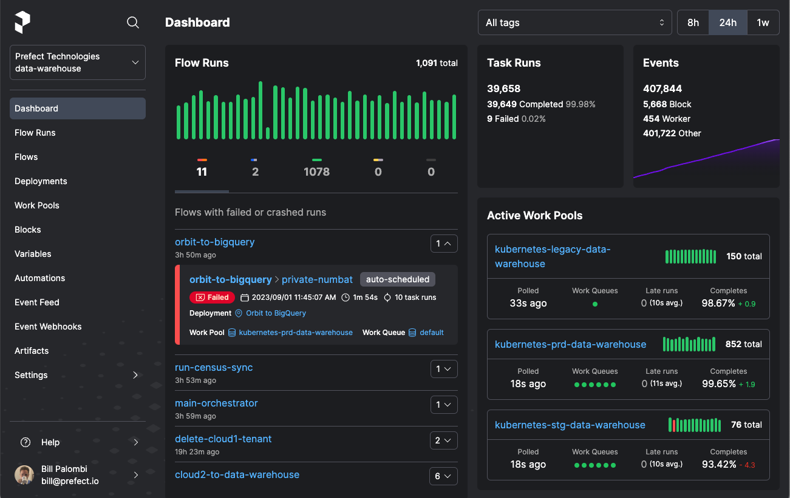

SEASONS = ['1213', '1314', '1516', '1617', '1718', '1819', '1920', '2021', '2122', '2223']
LEAGUES_MAPPING = {
'E0': 'English',
'SC0': 'Scotish',
'D1': 'German',
'I1': 'Italian',
'SP1': 'Spanish',
'F1': 'French',
'N1': 'Dutch',
'B1': 'Belgian',
'P1': 'Portuguese',
'T1': 'Turkish',
'G1': 'Greek'
}
Introduction
Prefect is a workflow orchestration tool. It makes accessible the creation, scheduling, and monitoring of complex data pipelines. The workflows are defined as Python code, while Prefect provides error handling, retry mechanisms, and a user-friendly dashboard for monitoring. Prefect is based on the following concepts:
- Tasks: Functions that represent a discrete unit of work in a Prefect workflow.
- Flows: Containers for workflow logic and allow users to interact with and reason about the state of their workflows.
- Results: They represent the data returned by a flow or a task.
- Artifacts: They are formatted outputs rendered in the Prefect UI, such as markdown, tables, or links.
- States: They represent the status of a particular task run or flow run.
- Task Runners: They allow selecting specific executors for Prefect tasks, such as concurrent, parallel, or distributed execution of tasks.
- Runtime Context: It provides information about the current flow or task run that you can refer to in your code.
- Profiles and Configuration: They are settings that can be used to interact with Prefect Cloud and a Prefect server.
- Blocks: Prefect primitives that enable the storage of configuration and provide a UI interface.
- Variables: They are named, mutable string values, much like environment variables.
- Deployments: They are server-side concepts that encapsulate flows, allowing them to be scheduled and triggered via API.
- Deployment Management: A set of files that describe how to prepare one or more flow deployments.
- Work Pools, Workers & Agents : They bridge the Prefect orchestration environment with the execution environment.
- Storage: It configures how flow code for deployments is persisted and retrieved by Prefect agents.
- Filesystems: They are blocks that allow to read and write data from paths.
- Infrastructure: They are blocks that specify infrastructure for flow runs created by the deployment.
- Schedules : They define how to create new flow runs automatically on a specified cadence.
- Logging: They log useful information about flows and tasks runs on the server.
Extracting the URLs
The goal is to create a data workflow that downloads soccer data from Football-Data.co.uk. The URL of each of those main leagues has the form 'https://www.football-data.co.uk/mmz4281/{season}/{league_id}.csv' where season is the season of the league and league_id is the league ID. Let’s define a few of those seasons and leagues:
We can use the above seasons and leagues to construct a mapping of (URL, league name and season) pairs:
URLS_MAPPING = {
f'https://www.football-data.co.uk/mmz4281/{season}/{league_id}.csv': (league, '-'.join([season[0:2], season[2:]])) for season in SEASONS for league_id, league in LEAGUES_MAPPING.items()
}
URLS_MAPPING{'https://www.football-data.co.uk/mmz4281/1213/E0.csv': ('English', '12-13'),
'https://www.football-data.co.uk/mmz4281/1213/SC0.csv': ('Scotish', '12-13'),
'https://www.football-data.co.uk/mmz4281/1213/D1.csv': ('German', '12-13'),
'https://www.football-data.co.uk/mmz4281/1213/I1.csv': ('Italian', '12-13'),
'https://www.football-data.co.uk/mmz4281/1213/SP1.csv': ('Spanish', '12-13'),
'https://www.football-data.co.uk/mmz4281/1213/F1.csv': ('French', '12-13'),
'https://www.football-data.co.uk/mmz4281/1213/N1.csv': ('Dutch', '12-13'),
'https://www.football-data.co.uk/mmz4281/1213/B1.csv': ('Belgian', '12-13'),
'https://www.football-data.co.uk/mmz4281/1213/P1.csv': ('Portuguese',
'12-13'),
'https://www.football-data.co.uk/mmz4281/1213/T1.csv': ('Turkish', '12-13'),
'https://www.football-data.co.uk/mmz4281/1213/G1.csv': ('Greek', '12-13'),
'https://www.football-data.co.uk/mmz4281/1314/E0.csv': ('English', '13-14'),
'https://www.football-data.co.uk/mmz4281/1314/SC0.csv': ('Scotish', '13-14'),
'https://www.football-data.co.uk/mmz4281/1314/D1.csv': ('German', '13-14'),
'https://www.football-data.co.uk/mmz4281/1314/I1.csv': ('Italian', '13-14'),
'https://www.football-data.co.uk/mmz4281/1314/SP1.csv': ('Spanish', '13-14'),
'https://www.football-data.co.uk/mmz4281/1314/F1.csv': ('French', '13-14'),
'https://www.football-data.co.uk/mmz4281/1314/N1.csv': ('Dutch', '13-14'),
'https://www.football-data.co.uk/mmz4281/1314/B1.csv': ('Belgian', '13-14'),
'https://www.football-data.co.uk/mmz4281/1314/P1.csv': ('Portuguese',
'13-14'),
'https://www.football-data.co.uk/mmz4281/1314/T1.csv': ('Turkish', '13-14'),
'https://www.football-data.co.uk/mmz4281/1314/G1.csv': ('Greek', '13-14'),
'https://www.football-data.co.uk/mmz4281/1516/E0.csv': ('English', '15-16'),
'https://www.football-data.co.uk/mmz4281/1516/SC0.csv': ('Scotish', '15-16'),
'https://www.football-data.co.uk/mmz4281/1516/D1.csv': ('German', '15-16'),
'https://www.football-data.co.uk/mmz4281/1516/I1.csv': ('Italian', '15-16'),
'https://www.football-data.co.uk/mmz4281/1516/SP1.csv': ('Spanish', '15-16'),
'https://www.football-data.co.uk/mmz4281/1516/F1.csv': ('French', '15-16'),
'https://www.football-data.co.uk/mmz4281/1516/N1.csv': ('Dutch', '15-16'),
'https://www.football-data.co.uk/mmz4281/1516/B1.csv': ('Belgian', '15-16'),
'https://www.football-data.co.uk/mmz4281/1516/P1.csv': ('Portuguese',
'15-16'),
'https://www.football-data.co.uk/mmz4281/1516/T1.csv': ('Turkish', '15-16'),
'https://www.football-data.co.uk/mmz4281/1516/G1.csv': ('Greek', '15-16'),
'https://www.football-data.co.uk/mmz4281/1617/E0.csv': ('English', '16-17'),
'https://www.football-data.co.uk/mmz4281/1617/SC0.csv': ('Scotish', '16-17'),
'https://www.football-data.co.uk/mmz4281/1617/D1.csv': ('German', '16-17'),
'https://www.football-data.co.uk/mmz4281/1617/I1.csv': ('Italian', '16-17'),
'https://www.football-data.co.uk/mmz4281/1617/SP1.csv': ('Spanish', '16-17'),
'https://www.football-data.co.uk/mmz4281/1617/F1.csv': ('French', '16-17'),
'https://www.football-data.co.uk/mmz4281/1617/N1.csv': ('Dutch', '16-17'),
'https://www.football-data.co.uk/mmz4281/1617/B1.csv': ('Belgian', '16-17'),
'https://www.football-data.co.uk/mmz4281/1617/P1.csv': ('Portuguese',
'16-17'),
'https://www.football-data.co.uk/mmz4281/1617/T1.csv': ('Turkish', '16-17'),
'https://www.football-data.co.uk/mmz4281/1617/G1.csv': ('Greek', '16-17'),
'https://www.football-data.co.uk/mmz4281/1718/E0.csv': ('English', '17-18'),
'https://www.football-data.co.uk/mmz4281/1718/SC0.csv': ('Scotish', '17-18'),
'https://www.football-data.co.uk/mmz4281/1718/D1.csv': ('German', '17-18'),
'https://www.football-data.co.uk/mmz4281/1718/I1.csv': ('Italian', '17-18'),
'https://www.football-data.co.uk/mmz4281/1718/SP1.csv': ('Spanish', '17-18'),
'https://www.football-data.co.uk/mmz4281/1718/F1.csv': ('French', '17-18'),
'https://www.football-data.co.uk/mmz4281/1718/N1.csv': ('Dutch', '17-18'),
'https://www.football-data.co.uk/mmz4281/1718/B1.csv': ('Belgian', '17-18'),
'https://www.football-data.co.uk/mmz4281/1718/P1.csv': ('Portuguese',
'17-18'),
'https://www.football-data.co.uk/mmz4281/1718/T1.csv': ('Turkish', '17-18'),
'https://www.football-data.co.uk/mmz4281/1718/G1.csv': ('Greek', '17-18'),
'https://www.football-data.co.uk/mmz4281/1819/E0.csv': ('English', '18-19'),
'https://www.football-data.co.uk/mmz4281/1819/SC0.csv': ('Scotish', '18-19'),
'https://www.football-data.co.uk/mmz4281/1819/D1.csv': ('German', '18-19'),
'https://www.football-data.co.uk/mmz4281/1819/I1.csv': ('Italian', '18-19'),
'https://www.football-data.co.uk/mmz4281/1819/SP1.csv': ('Spanish', '18-19'),
'https://www.football-data.co.uk/mmz4281/1819/F1.csv': ('French', '18-19'),
'https://www.football-data.co.uk/mmz4281/1819/N1.csv': ('Dutch', '18-19'),
'https://www.football-data.co.uk/mmz4281/1819/B1.csv': ('Belgian', '18-19'),
'https://www.football-data.co.uk/mmz4281/1819/P1.csv': ('Portuguese',
'18-19'),
'https://www.football-data.co.uk/mmz4281/1819/T1.csv': ('Turkish', '18-19'),
'https://www.football-data.co.uk/mmz4281/1819/G1.csv': ('Greek', '18-19'),
'https://www.football-data.co.uk/mmz4281/1920/E0.csv': ('English', '19-20'),
'https://www.football-data.co.uk/mmz4281/1920/SC0.csv': ('Scotish', '19-20'),
'https://www.football-data.co.uk/mmz4281/1920/D1.csv': ('German', '19-20'),
'https://www.football-data.co.uk/mmz4281/1920/I1.csv': ('Italian', '19-20'),
'https://www.football-data.co.uk/mmz4281/1920/SP1.csv': ('Spanish', '19-20'),
'https://www.football-data.co.uk/mmz4281/1920/F1.csv': ('French', '19-20'),
'https://www.football-data.co.uk/mmz4281/1920/N1.csv': ('Dutch', '19-20'),
'https://www.football-data.co.uk/mmz4281/1920/B1.csv': ('Belgian', '19-20'),
'https://www.football-data.co.uk/mmz4281/1920/P1.csv': ('Portuguese',
'19-20'),
'https://www.football-data.co.uk/mmz4281/1920/T1.csv': ('Turkish', '19-20'),
'https://www.football-data.co.uk/mmz4281/1920/G1.csv': ('Greek', '19-20'),
'https://www.football-data.co.uk/mmz4281/2021/E0.csv': ('English', '20-21'),
'https://www.football-data.co.uk/mmz4281/2021/SC0.csv': ('Scotish', '20-21'),
'https://www.football-data.co.uk/mmz4281/2021/D1.csv': ('German', '20-21'),
'https://www.football-data.co.uk/mmz4281/2021/I1.csv': ('Italian', '20-21'),
'https://www.football-data.co.uk/mmz4281/2021/SP1.csv': ('Spanish', '20-21'),
'https://www.football-data.co.uk/mmz4281/2021/F1.csv': ('French', '20-21'),
'https://www.football-data.co.uk/mmz4281/2021/N1.csv': ('Dutch', '20-21'),
'https://www.football-data.co.uk/mmz4281/2021/B1.csv': ('Belgian', '20-21'),
'https://www.football-data.co.uk/mmz4281/2021/P1.csv': ('Portuguese',
'20-21'),
'https://www.football-data.co.uk/mmz4281/2021/T1.csv': ('Turkish', '20-21'),
'https://www.football-data.co.uk/mmz4281/2021/G1.csv': ('Greek', '20-21'),
'https://www.football-data.co.uk/mmz4281/2122/E0.csv': ('English', '21-22'),
'https://www.football-data.co.uk/mmz4281/2122/SC0.csv': ('Scotish', '21-22'),
'https://www.football-data.co.uk/mmz4281/2122/D1.csv': ('German', '21-22'),
'https://www.football-data.co.uk/mmz4281/2122/I1.csv': ('Italian', '21-22'),
'https://www.football-data.co.uk/mmz4281/2122/SP1.csv': ('Spanish', '21-22'),
'https://www.football-data.co.uk/mmz4281/2122/F1.csv': ('French', '21-22'),
'https://www.football-data.co.uk/mmz4281/2122/N1.csv': ('Dutch', '21-22'),
'https://www.football-data.co.uk/mmz4281/2122/B1.csv': ('Belgian', '21-22'),
'https://www.football-data.co.uk/mmz4281/2122/P1.csv': ('Portuguese',
'21-22'),
'https://www.football-data.co.uk/mmz4281/2122/T1.csv': ('Turkish', '21-22'),
'https://www.football-data.co.uk/mmz4281/2122/G1.csv': ('Greek', '21-22'),
'https://www.football-data.co.uk/mmz4281/2223/E0.csv': ('English', '22-23'),
'https://www.football-data.co.uk/mmz4281/2223/SC0.csv': ('Scotish', '22-23'),
'https://www.football-data.co.uk/mmz4281/2223/D1.csv': ('German', '22-23'),
'https://www.football-data.co.uk/mmz4281/2223/I1.csv': ('Italian', '22-23'),
'https://www.football-data.co.uk/mmz4281/2223/SP1.csv': ('Spanish', '22-23'),
'https://www.football-data.co.uk/mmz4281/2223/F1.csv': ('French', '22-23'),
'https://www.football-data.co.uk/mmz4281/2223/N1.csv': ('Dutch', '22-23'),
'https://www.football-data.co.uk/mmz4281/2223/B1.csv': ('Belgian', '22-23'),
'https://www.football-data.co.uk/mmz4281/2223/P1.csv': ('Portuguese',
'22-23'),
'https://www.football-data.co.uk/mmz4281/2223/T1.csv': ('Turkish', '22-23'),
'https://www.football-data.co.uk/mmz4281/2223/G1.csv': ('Greek', '22-23')}We will use the above URLs to download and extract the data into a single dataframe. Additionally, the following imports will be required:
from time import time
import httpx
import asyncio
import pandas as pd
from io import StringIO
from prefect import flow
from prefect import task
from prefect.logging import get_run_logger
from prefect.task_runners import ConcurrentTaskRunnerJust Python functions
The simplest approach to implement the data workflow is not to use Prefect and rely on Python functions. Let’s start by defining the three following functions:
def request_csv_data(client, url, **kwargs):
response = client.get(url=url)
return response
def download_csvs_data(urls_mapping):
with httpx.Client() as client:
responses = [request_csv_data(client, url) for url, (league, season) in urls_mapping.items()]
csvs_data = [StringIO(str(response.content, encoding='windows-1254')) for response in responses]
return csvs_data
def download_data(urls_mapping):
csvs_data = download_csvs_data(urls_mapping)
data = [pd.read_csv(csv_data, encoding = 'windows-1254') for csv_data in csvs_data]
data = pd.concat(data, ignore_index=True)
return datarequest_csv_datawill use the parametersclientandurlof a CSV to request the data.download_csvs_datawill use the parameterurls_mappingand therequest_csv_datafunction to download all CSVs data and convert them to a list ofStringIOobjects that can be read from thepd.read_csvfunction as dataframes.download_datawill use the parameterurls_mappingand thedownload_csvs_datafunction to download all CSVs data, read them as dataframes and combine them into a single dataframe.
Let’s use the last function to run the data workflow:
data = download_data(URLS_MAPPING)
data| Div | Date | HomeTeam | AwayTeam | FTHG | FTAG | FTR | HTHG | HTAG | HTR | ... | AHCh | B365CAHH | B365CAHA | PCAHH | PCAHA | MaxCAHH | MaxCAHA | AvgCAHH | AvgCAHA | Unnamed: 105 | |
|---|---|---|---|---|---|---|---|---|---|---|---|---|---|---|---|---|---|---|---|---|---|
| 0 | E0 | 18/08/12 | Arsenal | Sunderland | 0.0 | 0.0 | D | 0.0 | 0.0 | D | ... | NaN | NaN | NaN | NaN | NaN | NaN | NaN | NaN | NaN | NaN |
| 1 | E0 | 18/08/12 | Fulham | Norwich | 5.0 | 0.0 | H | 2.0 | 0.0 | H | ... | NaN | NaN | NaN | NaN | NaN | NaN | NaN | NaN | NaN | NaN |
| 2 | E0 | 18/08/12 | Newcastle | Tottenham | 2.0 | 1.0 | H | 0.0 | 0.0 | D | ... | NaN | NaN | NaN | NaN | NaN | NaN | NaN | NaN | NaN | NaN |
| 3 | E0 | 18/08/12 | QPR | Swansea | 0.0 | 5.0 | A | 0.0 | 1.0 | A | ... | NaN | NaN | NaN | NaN | NaN | NaN | NaN | NaN | NaN | NaN |
| 4 | E0 | 18/08/12 | Reading | Stoke | 1.0 | 1.0 | D | 0.0 | 1.0 | A | ... | NaN | NaN | NaN | NaN | NaN | NaN | NaN | NaN | NaN | NaN |
| ... | ... | ... | ... | ... | ... | ... | ... | ... | ... | ... | ... | ... | ... | ... | ... | ... | ... | ... | ... | ... | ... |
| 34679 | G1 | 13/05/2023 | Ionikos | Lamia | 2.0 | 2.0 | D | 2.0 | 0.0 | H | ... | -0.50 | 2.05 | 1.80 | 2.04 | 1.72 | 2.19 | 1.87 | 2.03 | 1.76 | NaN |
| 34680 | G1 | 13/05/2023 | Levadeiakos | Giannina | 3.0 | 3.0 | D | 2.0 | 2.0 | D | ... | -0.25 | 1.82 | 2.02 | 1.85 | 2.01 | 2.04 | 2.05 | 1.86 | 1.93 | NaN |
| 34681 | G1 | 14/05/2023 | AEK | Volos NFC | 4.0 | 0.0 | H | 2.0 | 0.0 | H | ... | -3.50 | 1.93 | 1.93 | 1.92 | 1.93 | 2.05 | 1.94 | 1.91 | 1.87 | NaN |
| 34682 | G1 | 14/05/2023 | Panathinaikos | Aris | 1.0 | 1.0 | D | 1.0 | 1.0 | D | ... | -1.25 | 1.95 | 1.90 | 1.95 | 1.90 | 1.99 | 1.96 | 1.89 | 1.90 | NaN |
| 34683 | G1 | 14/05/2023 | PAOK | Olympiakos | 0.0 | 1.0 | A | 0.0 | 1.0 | A | ... | -0.50 | 1.85 | 2.00 | 1.89 | 1.96 | 1.98 | 2.05 | 1.91 | 1.88 | NaN |
34684 rows × 139 columns
The above code works perfectly fine but if you would like to have properties like scheduling, retries, logging, observability etc then you would have to implement these features from scratch.
Using task and flows
Prefect offers all the above functionality. It also uses some sensible defaults but we can further customize the data workflow. Based on the definitions of Prefect concepts, we can decorate the functions as follows:
request_csv_datarepresents a discrete unit of work and will receive thetaskdecorator.download_csvs_datacontains the above tasks and will receive theflowdecorator.download_dataimplements the full data workflow and will receive theflowdecorator.
Therefore request_csv_data represents tasks, while download_csvs_data is a subflow of the download_data flow:
@task(name='Request CSV data.', retries=5)
def request_csv_data(client: httpx.Client, url: str, **kwargs):
logger = get_run_logger()
start_time = time()
response = client.get(url=url)
logger.info(f'CSV data, {kwargs["league"]} league and {kwargs["season"]} season, response time: {time() - start_time}s')
return response
@flow(name='Download synchronously CSVs data.', validate_parameters=True)
def download_csvs_data(urls_mapping: dict[str, tuple[str, str]]):
logger = get_run_logger()
start_time = time()
with httpx.Client() as client:
responses = [request_csv_data(client, url, league=league, season=season) for url, (league, season) in urls_mapping.items()]
csvs_data = [StringIO(str(response.content, encoding='windows-1254')) for response in responses]
logger.info(f'CSVs data download time: {time() - start_time}s')
return csvs_data
@flow(name='Download synchronously data.', validate_parameters=True)
def download_data(urls_mapping: dict[str, tuple[str, str]]):
logger = get_run_logger()
start_time = time()
csvs_data = download_csvs_data(urls_mapping)
data = [pd.read_csv(csv_data, encoding = 'windows-1254') for csv_data in csvs_data]
data = pd.concat(data, ignore_index=True)
logger.info(f'Data download time: {time() - start_time}s')
return dataWe run the updated flow:
data = download_data(URLS_MAPPING)
data22:35:46.700 | INFO | prefect.engine - Created flow run 'rugged-oyster' for flow 'Download synchronously data.'
22:35:46.914 | INFO | Flow run 'rugged-oyster' - Created subflow run 'celadon-tuatara' for flow 'Download synchronously CSVs data.'
22:35:47.156 | INFO | Flow run 'celadon-tuatara' - Created task run 'Request CSV data.-0' for task 'Request CSV data.'
22:35:47.159 | INFO | Flow run 'celadon-tuatara' - Executing 'Request CSV data.-0' immediately...
22:35:47.701 | INFO | Task run 'Request CSV data.-0' - CSV data, English league and 12-13 season, response time: 0.4806220531463623s
22:35:47.767 | INFO | Task run 'Request CSV data.-0' - Finished in state Completed()
22:35:47.802 | INFO | Flow run 'celadon-tuatara' - Created task run 'Request CSV data.-1' for task 'Request CSV data.'
22:35:47.804 | INFO | Flow run 'celadon-tuatara' - Executing 'Request CSV data.-1' immediately...
22:35:47.977 | INFO | Task run 'Request CSV data.-1' - CSV data, Scotish league and 12-13 season, response time: 0.11300921440124512s
22:35:48.036 | INFO | Task run 'Request CSV data.-1' - Finished in state Completed()
22:35:48.076 | INFO | Flow run 'celadon-tuatara' - Created task run 'Request CSV data.-2' for task 'Request CSV data.'
22:35:48.078 | INFO | Flow run 'celadon-tuatara' - Executing 'Request CSV data.-2' immediately...
22:35:48.253 | INFO | Task run 'Request CSV data.-2' - CSV data, German league and 12-13 season, response time: 0.11159586906433105s
22:35:48.305 | INFO | Task run 'Request CSV data.-2' - Finished in state Completed()
22:35:48.340 | INFO | Flow run 'celadon-tuatara' - Created task run 'Request CSV data.-3' for task 'Request CSV data.'
22:35:48.343 | INFO | Flow run 'celadon-tuatara' - Executing 'Request CSV data.-3' immediately...
22:35:48.519 | INFO | Task run 'Request CSV data.-3' - CSV data, Italian league and 12-13 season, response time: 0.11585187911987305s
22:35:48.564 | INFO | Task run 'Request CSV data.-3' - Finished in state Completed()
22:35:48.597 | INFO | Flow run 'celadon-tuatara' - Created task run 'Request CSV data.-4' for task 'Request CSV data.'
22:35:48.600 | INFO | Flow run 'celadon-tuatara' - Executing 'Request CSV data.-4' immediately...
22:35:48.769 | INFO | Task run 'Request CSV data.-4' - CSV data, Spanish league and 12-13 season, response time: 0.1113729476928711s
22:35:48.823 | INFO | Task run 'Request CSV data.-4' - Finished in state Completed()
22:35:48.857 | INFO | Flow run 'celadon-tuatara' - Created task run 'Request CSV data.-5' for task 'Request CSV data.'
22:35:48.859 | INFO | Flow run 'celadon-tuatara' - Executing 'Request CSV data.-5' immediately...
22:35:49.042 | INFO | Task run 'Request CSV data.-5' - CSV data, French league and 12-13 season, response time: 0.11727786064147949s
22:35:49.095 | INFO | Task run 'Request CSV data.-5' - Finished in state Completed()
22:35:49.137 | INFO | Flow run 'celadon-tuatara' - Created task run 'Request CSV data.-6' for task 'Request CSV data.'
22:35:49.139 | INFO | Flow run 'celadon-tuatara' - Executing 'Request CSV data.-6' immediately...
22:35:49.329 | INFO | Task run 'Request CSV data.-6' - CSV data, Dutch league and 12-13 season, response time: 0.11086678504943848s
22:35:49.391 | INFO | Task run 'Request CSV data.-6' - Finished in state Completed()
22:35:49.430 | INFO | Flow run 'celadon-tuatara' - Created task run 'Request CSV data.-7' for task 'Request CSV data.'
22:35:49.433 | INFO | Flow run 'celadon-tuatara' - Executing 'Request CSV data.-7' immediately...
22:35:49.621 | INFO | Task run 'Request CSV data.-7' - CSV data, Belgian league and 12-13 season, response time: 0.11908411979675293s
22:35:49.719 | INFO | Task run 'Request CSV data.-7' - Finished in state Completed()
22:35:49.807 | INFO | Flow run 'celadon-tuatara' - Created task run 'Request CSV data.-8' for task 'Request CSV data.'
22:35:49.943 | INFO | Flow run 'celadon-tuatara' - Executing 'Request CSV data.-8' immediately...
22:35:50.521 | INFO | Task run 'Request CSV data.-8' - CSV data, Portuguese league and 12-13 season, response time: 0.09516310691833496s
22:35:50.604 | INFO | Task run 'Request CSV data.-8' - Finished in state Completed()
22:35:50.675 | INFO | Flow run 'celadon-tuatara' - Created task run 'Request CSV data.-9' for task 'Request CSV data.'
22:35:50.679 | INFO | Flow run 'celadon-tuatara' - Executing 'Request CSV data.-9' immediately...
22:35:50.918 | INFO | Task run 'Request CSV data.-9' - CSV data, Turkish league and 12-13 season, response time: 0.10672688484191895s
22:35:51.038 | INFO | Task run 'Request CSV data.-9' - Finished in state Completed()
22:35:51.098 | INFO | Flow run 'celadon-tuatara' - Created task run 'Request CSV data.-10' for task 'Request CSV data.'
22:35:51.101 | INFO | Flow run 'celadon-tuatara' - Executing 'Request CSV data.-10' immediately...
22:35:51.257 | INFO | Task run 'Request CSV data.-10' - CSV data, Greek league and 12-13 season, response time: 0.09396100044250488s
22:35:51.313 | INFO | Task run 'Request CSV data.-10' - Finished in state Completed()
22:35:51.346 | INFO | Flow run 'celadon-tuatara' - Created task run 'Request CSV data.-11' for task 'Request CSV data.'
22:35:51.349 | INFO | Flow run 'celadon-tuatara' - Executing 'Request CSV data.-11' immediately...
22:35:51.520 | INFO | Task run 'Request CSV data.-11' - CSV data, English league and 13-14 season, response time: 0.11201596260070801s
22:35:51.569 | INFO | Task run 'Request CSV data.-11' - Finished in state Completed()
22:35:51.602 | INFO | Flow run 'celadon-tuatara' - Created task run 'Request CSV data.-12' for task 'Request CSV data.'
22:35:51.604 | INFO | Flow run 'celadon-tuatara' - Executing 'Request CSV data.-12' immediately...
22:35:51.758 | INFO | Task run 'Request CSV data.-12' - CSV data, Scotish league and 13-14 season, response time: 0.09363508224487305s
22:35:51.816 | INFO | Task run 'Request CSV data.-12' - Finished in state Completed()
22:35:51.854 | INFO | Flow run 'celadon-tuatara' - Created task run 'Request CSV data.-13' for task 'Request CSV data.'
22:35:51.856 | INFO | Flow run 'celadon-tuatara' - Executing 'Request CSV data.-13' immediately...
22:35:52.023 | INFO | Task run 'Request CSV data.-13' - CSV data, German league and 13-14 season, response time: 0.10040879249572754s
22:35:52.072 | INFO | Task run 'Request CSV data.-13' - Finished in state Completed()
22:35:52.106 | INFO | Flow run 'celadon-tuatara' - Created task run 'Request CSV data.-14' for task 'Request CSV data.'
22:35:52.108 | INFO | Flow run 'celadon-tuatara' - Executing 'Request CSV data.-14' immediately...
22:35:52.284 | INFO | Task run 'Request CSV data.-14' - CSV data, Italian league and 13-14 season, response time: 0.11635017395019531s
22:35:52.339 | INFO | Task run 'Request CSV data.-14' - Finished in state Completed()
22:35:52.376 | INFO | Flow run 'celadon-tuatara' - Created task run 'Request CSV data.-15' for task 'Request CSV data.'
22:35:52.378 | INFO | Flow run 'celadon-tuatara' - Executing 'Request CSV data.-15' immediately...
22:35:52.543 | INFO | Task run 'Request CSV data.-15' - CSV data, Spanish league and 13-14 season, response time: 0.10585761070251465s
22:35:52.594 | INFO | Task run 'Request CSV data.-15' - Finished in state Completed()
22:35:52.627 | INFO | Flow run 'celadon-tuatara' - Created task run 'Request CSV data.-16' for task 'Request CSV data.'
22:35:52.629 | INFO | Flow run 'celadon-tuatara' - Executing 'Request CSV data.-16' immediately...
22:35:52.793 | INFO | Task run 'Request CSV data.-16' - CSV data, French league and 13-14 season, response time: 0.1046907901763916s
22:35:52.838 | INFO | Task run 'Request CSV data.-16' - Finished in state Completed()
22:35:52.874 | INFO | Flow run 'celadon-tuatara' - Created task run 'Request CSV data.-17' for task 'Request CSV data.'
22:35:52.876 | INFO | Flow run 'celadon-tuatara' - Executing 'Request CSV data.-17' immediately...
22:35:53.040 | INFO | Task run 'Request CSV data.-17' - CSV data, Dutch league and 13-14 season, response time: 0.1049962043762207s
22:35:53.107 | INFO | Task run 'Request CSV data.-17' - Finished in state Completed()
22:35:53.146 | INFO | Flow run 'celadon-tuatara' - Created task run 'Request CSV data.-18' for task 'Request CSV data.'
22:35:53.148 | INFO | Flow run 'celadon-tuatara' - Executing 'Request CSV data.-18' immediately...
22:35:53.303 | INFO | Task run 'Request CSV data.-18' - CSV data, Belgian league and 13-14 season, response time: 0.0944819450378418s
22:35:53.351 | INFO | Task run 'Request CSV data.-18' - Finished in state Completed()
22:35:53.387 | INFO | Flow run 'celadon-tuatara' - Created task run 'Request CSV data.-19' for task 'Request CSV data.'
22:35:53.389 | INFO | Flow run 'celadon-tuatara' - Executing 'Request CSV data.-19' immediately...
22:35:53.560 | INFO | Task run 'Request CSV data.-19' - CSV data, Portuguese league and 13-14 season, response time: 0.11137604713439941s
22:35:53.608 | INFO | Task run 'Request CSV data.-19' - Finished in state Completed()
22:35:53.643 | INFO | Flow run 'celadon-tuatara' - Created task run 'Request CSV data.-20' for task 'Request CSV data.'
22:35:53.645 | INFO | Flow run 'celadon-tuatara' - Executing 'Request CSV data.-20' immediately...
22:35:54.347 | INFO | Task run 'Request CSV data.-20' - CSV data, Turkish league and 13-14 season, response time: 0.6430470943450928s
22:35:54.390 | INFO | Task run 'Request CSV data.-20' - Finished in state Completed()
22:35:54.424 | INFO | Flow run 'celadon-tuatara' - Created task run 'Request CSV data.-21' for task 'Request CSV data.'
22:35:54.427 | INFO | Flow run 'celadon-tuatara' - Executing 'Request CSV data.-21' immediately...
22:35:54.660 | INFO | Task run 'Request CSV data.-21' - CSV data, Greek league and 13-14 season, response time: 0.17232084274291992s
22:35:54.713 | INFO | Task run 'Request CSV data.-21' - Finished in state Completed()
22:35:54.750 | INFO | Flow run 'celadon-tuatara' - Created task run 'Request CSV data.-22' for task 'Request CSV data.'
22:35:54.753 | INFO | Flow run 'celadon-tuatara' - Executing 'Request CSV data.-22' immediately...
22:35:54.952 | INFO | Task run 'Request CSV data.-22' - CSV data, English league and 15-16 season, response time: 0.13093805313110352s
22:35:55.004 | INFO | Task run 'Request CSV data.-22' - Finished in state Completed()
22:35:55.039 | INFO | Flow run 'celadon-tuatara' - Created task run 'Request CSV data.-23' for task 'Request CSV data.'
22:35:55.041 | INFO | Flow run 'celadon-tuatara' - Executing 'Request CSV data.-23' immediately...
22:35:55.192 | INFO | Task run 'Request CSV data.-23' - CSV data, Scotish league and 15-16 season, response time: 0.09205198287963867s
22:35:55.241 | INFO | Task run 'Request CSV data.-23' - Finished in state Completed()
22:35:55.276 | INFO | Flow run 'celadon-tuatara' - Created task run 'Request CSV data.-24' for task 'Request CSV data.'
22:35:55.278 | INFO | Flow run 'celadon-tuatara' - Executing 'Request CSV data.-24' immediately...
22:35:55.461 | INFO | Task run 'Request CSV data.-24' - CSV data, German league and 15-16 season, response time: 0.11630511283874512s
22:35:55.520 | INFO | Task run 'Request CSV data.-24' - Finished in state Completed()
22:35:55.561 | INFO | Flow run 'celadon-tuatara' - Created task run 'Request CSV data.-25' for task 'Request CSV data.'
22:35:55.564 | INFO | Flow run 'celadon-tuatara' - Executing 'Request CSV data.-25' immediately...
22:35:55.768 | INFO | Task run 'Request CSV data.-25' - CSV data, Italian league and 15-16 season, response time: 0.13309407234191895s
22:35:55.825 | INFO | Task run 'Request CSV data.-25' - Finished in state Completed()
22:35:55.858 | INFO | Flow run 'celadon-tuatara' - Created task run 'Request CSV data.-26' for task 'Request CSV data.'
22:35:55.860 | INFO | Flow run 'celadon-tuatara' - Executing 'Request CSV data.-26' immediately...
22:35:56.022 | INFO | Task run 'Request CSV data.-26' - CSV data, Spanish league and 15-16 season, response time: 0.10325884819030762s
22:35:56.066 | INFO | Task run 'Request CSV data.-26' - Finished in state Completed()
22:35:56.101 | INFO | Flow run 'celadon-tuatara' - Created task run 'Request CSV data.-27' for task 'Request CSV data.'
22:35:56.103 | INFO | Flow run 'celadon-tuatara' - Executing 'Request CSV data.-27' immediately...
22:35:56.254 | INFO | Task run 'Request CSV data.-27' - CSV data, French league and 15-16 season, response time: 0.09220600128173828s
22:35:56.305 | INFO | Task run 'Request CSV data.-27' - Finished in state Completed()
22:35:56.340 | INFO | Flow run 'celadon-tuatara' - Created task run 'Request CSV data.-28' for task 'Request CSV data.'
22:35:56.342 | INFO | Flow run 'celadon-tuatara' - Executing 'Request CSV data.-28' immediately...
22:35:56.484 | INFO | Task run 'Request CSV data.-28' - CSV data, Dutch league and 15-16 season, response time: 0.08370685577392578s
22:35:56.537 | INFO | Task run 'Request CSV data.-28' - Finished in state Completed()
22:35:56.570 | INFO | Flow run 'celadon-tuatara' - Created task run 'Request CSV data.-29' for task 'Request CSV data.'
22:35:56.573 | INFO | Flow run 'celadon-tuatara' - Executing 'Request CSV data.-29' immediately...
22:35:56.764 | INFO | Task run 'Request CSV data.-29' - CSV data, Belgian league and 15-16 season, response time: 0.13189220428466797s
22:35:56.817 | INFO | Task run 'Request CSV data.-29' - Finished in state Completed()
22:35:56.850 | INFO | Flow run 'celadon-tuatara' - Created task run 'Request CSV data.-30' for task 'Request CSV data.'
22:35:56.853 | INFO | Flow run 'celadon-tuatara' - Executing 'Request CSV data.-30' immediately...
22:35:56.994 | INFO | Task run 'Request CSV data.-30' - CSV data, Portuguese league and 15-16 season, response time: 0.0831151008605957s
22:35:57.047 | INFO | Task run 'Request CSV data.-30' - Finished in state Completed()
22:35:57.080 | INFO | Flow run 'celadon-tuatara' - Created task run 'Request CSV data.-31' for task 'Request CSV data.'
22:35:57.082 | INFO | Flow run 'celadon-tuatara' - Executing 'Request CSV data.-31' immediately...
22:35:57.248 | INFO | Task run 'Request CSV data.-31' - CSV data, Turkish league and 15-16 season, response time: 0.10653090476989746s
22:35:57.288 | INFO | Task run 'Request CSV data.-31' - Finished in state Completed()
22:35:57.321 | INFO | Flow run 'celadon-tuatara' - Created task run 'Request CSV data.-32' for task 'Request CSV data.'
22:35:57.323 | INFO | Flow run 'celadon-tuatara' - Executing 'Request CSV data.-32' immediately...
22:35:57.470 | INFO | Task run 'Request CSV data.-32' - CSV data, Greek league and 15-16 season, response time: 0.08733677864074707s
22:35:57.519 | INFO | Task run 'Request CSV data.-32' - Finished in state Completed()
22:35:57.555 | INFO | Flow run 'celadon-tuatara' - Created task run 'Request CSV data.-33' for task 'Request CSV data.'
22:35:57.557 | INFO | Flow run 'celadon-tuatara' - Executing 'Request CSV data.-33' immediately...
22:35:57.730 | INFO | Task run 'Request CSV data.-33' - CSV data, English league and 16-17 season, response time: 0.11463594436645508s
22:35:57.775 | INFO | Task run 'Request CSV data.-33' - Finished in state Completed()
22:35:57.809 | INFO | Flow run 'celadon-tuatara' - Created task run 'Request CSV data.-34' for task 'Request CSV data.'
22:35:57.811 | INFO | Flow run 'celadon-tuatara' - Executing 'Request CSV data.-34' immediately...
22:35:57.959 | INFO | Task run 'Request CSV data.-34' - CSV data, Scotish league and 16-17 season, response time: 0.08218884468078613s
22:35:58.022 | INFO | Task run 'Request CSV data.-34' - Finished in state Completed()
22:35:58.057 | INFO | Flow run 'celadon-tuatara' - Created task run 'Request CSV data.-35' for task 'Request CSV data.'
22:35:58.059 | INFO | Flow run 'celadon-tuatara' - Executing 'Request CSV data.-35' immediately...
22:35:58.206 | INFO | Task run 'Request CSV data.-35' - CSV data, German league and 16-17 season, response time: 0.08752703666687012s
22:35:58.255 | INFO | Task run 'Request CSV data.-35' - Finished in state Completed()
22:35:58.287 | INFO | Flow run 'celadon-tuatara' - Created task run 'Request CSV data.-36' for task 'Request CSV data.'
22:35:58.290 | INFO | Flow run 'celadon-tuatara' - Executing 'Request CSV data.-36' immediately...
22:35:58.444 | INFO | Task run 'Request CSV data.-36' - CSV data, Italian league and 16-17 season, response time: 0.09526872634887695s
22:35:58.491 | INFO | Task run 'Request CSV data.-36' - Finished in state Completed()
22:35:58.525 | INFO | Flow run 'celadon-tuatara' - Created task run 'Request CSV data.-37' for task 'Request CSV data.'
22:35:58.528 | INFO | Flow run 'celadon-tuatara' - Executing 'Request CSV data.-37' immediately...
22:35:58.678 | INFO | Task run 'Request CSV data.-37' - CSV data, Spanish league and 16-17 season, response time: 0.08906292915344238s
22:35:58.726 | INFO | Task run 'Request CSV data.-37' - Finished in state Completed()
22:35:58.759 | INFO | Flow run 'celadon-tuatara' - Created task run 'Request CSV data.-38' for task 'Request CSV data.'
22:35:58.762 | INFO | Flow run 'celadon-tuatara' - Executing 'Request CSV data.-38' immediately...
22:35:58.911 | INFO | Task run 'Request CSV data.-38' - CSV data, French league and 16-17 season, response time: 0.09030723571777344s
22:35:58.964 | INFO | Task run 'Request CSV data.-38' - Finished in state Completed()
22:35:58.999 | INFO | Flow run 'celadon-tuatara' - Created task run 'Request CSV data.-39' for task 'Request CSV data.'
22:35:59.001 | INFO | Flow run 'celadon-tuatara' - Executing 'Request CSV data.-39' immediately...
22:35:59.146 | INFO | Task run 'Request CSV data.-39' - CSV data, Dutch league and 16-17 season, response time: 0.0836629867553711s
22:35:59.196 | INFO | Task run 'Request CSV data.-39' - Finished in state Completed()
22:35:59.232 | INFO | Flow run 'celadon-tuatara' - Created task run 'Request CSV data.-40' for task 'Request CSV data.'
22:35:59.234 | INFO | Flow run 'celadon-tuatara' - Executing 'Request CSV data.-40' immediately...
22:35:59.693 | INFO | Task run 'Request CSV data.-40' - CSV data, Belgian league and 16-17 season, response time: 0.37691497802734375s
22:35:59.749 | INFO | Task run 'Request CSV data.-40' - Finished in state Completed()
22:35:59.782 | INFO | Flow run 'celadon-tuatara' - Created task run 'Request CSV data.-41' for task 'Request CSV data.'
22:35:59.785 | INFO | Flow run 'celadon-tuatara' - Executing 'Request CSV data.-41' immediately...
22:35:59.977 | INFO | Task run 'Request CSV data.-41' - CSV data, Portuguese league and 16-17 season, response time: 0.13380765914916992s
22:36:00.034 | INFO | Task run 'Request CSV data.-41' - Finished in state Completed()
22:36:00.068 | INFO | Flow run 'celadon-tuatara' - Created task run 'Request CSV data.-42' for task 'Request CSV data.'
22:36:00.071 | INFO | Flow run 'celadon-tuatara' - Executing 'Request CSV data.-42' immediately...
22:36:00.233 | INFO | Task run 'Request CSV data.-42' - CSV data, Turkish league and 16-17 season, response time: 0.10114884376525879s
22:36:00.281 | INFO | Task run 'Request CSV data.-42' - Finished in state Completed()
22:36:00.315 | INFO | Flow run 'celadon-tuatara' - Created task run 'Request CSV data.-43' for task 'Request CSV data.'
22:36:00.317 | INFO | Flow run 'celadon-tuatara' - Executing 'Request CSV data.-43' immediately...
22:36:00.465 | INFO | Task run 'Request CSV data.-43' - CSV data, Greek league and 16-17 season, response time: 0.08925414085388184s
22:36:00.512 | INFO | Task run 'Request CSV data.-43' - Finished in state Completed()
22:36:00.548 | INFO | Flow run 'celadon-tuatara' - Created task run 'Request CSV data.-44' for task 'Request CSV data.'
22:36:00.551 | INFO | Flow run 'celadon-tuatara' - Executing 'Request CSV data.-44' immediately...
22:36:00.721 | INFO | Task run 'Request CSV data.-44' - CSV data, English league and 17-18 season, response time: 0.11192607879638672s
22:36:00.773 | INFO | Task run 'Request CSV data.-44' - Finished in state Completed()
22:36:00.806 | INFO | Flow run 'celadon-tuatara' - Created task run 'Request CSV data.-45' for task 'Request CSV data.'
22:36:00.808 | INFO | Flow run 'celadon-tuatara' - Executing 'Request CSV data.-45' immediately...
22:36:00.961 | INFO | Task run 'Request CSV data.-45' - CSV data, Scotish league and 17-18 season, response time: 0.09234094619750977s
22:36:01.011 | INFO | Task run 'Request CSV data.-45' - Finished in state Completed()
22:36:01.047 | INFO | Flow run 'celadon-tuatara' - Created task run 'Request CSV data.-46' for task 'Request CSV data.'
22:36:01.049 | INFO | Flow run 'celadon-tuatara' - Executing 'Request CSV data.-46' immediately...
22:36:01.210 | INFO | Task run 'Request CSV data.-46' - CSV data, German league and 17-18 season, response time: 0.1005251407623291s
22:36:01.264 | INFO | Task run 'Request CSV data.-46' - Finished in state Completed()
22:36:01.296 | INFO | Flow run 'celadon-tuatara' - Created task run 'Request CSV data.-47' for task 'Request CSV data.'
22:36:01.299 | INFO | Flow run 'celadon-tuatara' - Executing 'Request CSV data.-47' immediately...
22:36:01.473 | INFO | Task run 'Request CSV data.-47' - CSV data, Italian league and 17-18 season, response time: 0.10177803039550781s
22:36:01.519 | INFO | Task run 'Request CSV data.-47' - Finished in state Completed()
22:36:01.555 | INFO | Flow run 'celadon-tuatara' - Created task run 'Request CSV data.-48' for task 'Request CSV data.'
22:36:01.557 | INFO | Flow run 'celadon-tuatara' - Executing 'Request CSV data.-48' immediately...
22:36:01.723 | INFO | Task run 'Request CSV data.-48' - CSV data, Spanish league and 17-18 season, response time: 0.1065819263458252s
22:36:01.769 | INFO | Task run 'Request CSV data.-48' - Finished in state Completed()
22:36:01.803 | INFO | Flow run 'celadon-tuatara' - Created task run 'Request CSV data.-49' for task 'Request CSV data.'
22:36:01.805 | INFO | Flow run 'celadon-tuatara' - Executing 'Request CSV data.-49' immediately...
22:36:01.971 | INFO | Task run 'Request CSV data.-49' - CSV data, French league and 17-18 season, response time: 0.10649299621582031s
22:36:02.020 | INFO | Task run 'Request CSV data.-49' - Finished in state Completed()
22:36:02.054 | INFO | Flow run 'celadon-tuatara' - Created task run 'Request CSV data.-50' for task 'Request CSV data.'
22:36:02.056 | INFO | Flow run 'celadon-tuatara' - Executing 'Request CSV data.-50' immediately...
22:36:02.211 | INFO | Task run 'Request CSV data.-50' - CSV data, Dutch league and 17-18 season, response time: 0.09567523002624512s
22:36:02.255 | INFO | Task run 'Request CSV data.-50' - Finished in state Completed()
22:36:02.289 | INFO | Flow run 'celadon-tuatara' - Created task run 'Request CSV data.-51' for task 'Request CSV data.'
22:36:02.292 | INFO | Flow run 'celadon-tuatara' - Executing 'Request CSV data.-51' immediately...
22:36:02.438 | INFO | Task run 'Request CSV data.-51' - CSV data, Belgian league and 17-18 season, response time: 0.08878016471862793s
22:36:02.487 | INFO | Task run 'Request CSV data.-51' - Finished in state Completed()
22:36:02.521 | INFO | Flow run 'celadon-tuatara' - Created task run 'Request CSV data.-52' for task 'Request CSV data.'
22:36:02.524 | INFO | Flow run 'celadon-tuatara' - Executing 'Request CSV data.-52' immediately...
22:36:02.725 | INFO | Task run 'Request CSV data.-52' - CSV data, Portuguese league and 17-18 season, response time: 0.14150285720825195s
22:36:02.779 | INFO | Task run 'Request CSV data.-52' - Finished in state Completed()
22:36:02.816 | INFO | Flow run 'celadon-tuatara' - Created task run 'Request CSV data.-53' for task 'Request CSV data.'
22:36:02.818 | INFO | Flow run 'celadon-tuatara' - Executing 'Request CSV data.-53' immediately...
22:36:02.989 | INFO | Task run 'Request CSV data.-53' - CSV data, Turkish league and 17-18 season, response time: 0.10813784599304199s
22:36:03.045 | INFO | Task run 'Request CSV data.-53' - Finished in state Completed()
22:36:03.079 | INFO | Flow run 'celadon-tuatara' - Created task run 'Request CSV data.-54' for task 'Request CSV data.'
22:36:03.082 | INFO | Flow run 'celadon-tuatara' - Executing 'Request CSV data.-54' immediately...
22:36:03.272 | INFO | Task run 'Request CSV data.-54' - CSV data, Greek league and 17-18 season, response time: 0.1312727928161621s
22:36:03.322 | INFO | Task run 'Request CSV data.-54' - Finished in state Completed()
22:36:03.355 | INFO | Flow run 'celadon-tuatara' - Created task run 'Request CSV data.-55' for task 'Request CSV data.'
22:36:03.357 | INFO | Flow run 'celadon-tuatara' - Executing 'Request CSV data.-55' immediately...
22:36:03.548 | INFO | Task run 'Request CSV data.-55' - CSV data, English league and 18-19 season, response time: 0.11198711395263672s
22:36:03.599 | INFO | Task run 'Request CSV data.-55' - Finished in state Completed()
22:36:03.633 | INFO | Flow run 'celadon-tuatara' - Created task run 'Request CSV data.-56' for task 'Request CSV data.'
22:36:03.635 | INFO | Flow run 'celadon-tuatara' - Executing 'Request CSV data.-56' immediately...
22:36:03.861 | INFO | Task run 'Request CSV data.-56' - CSV data, Scotish league and 18-19 season, response time: 0.16811490058898926s
22:36:03.913 | INFO | Task run 'Request CSV data.-56' - Finished in state Completed()
22:36:03.947 | INFO | Flow run 'celadon-tuatara' - Created task run 'Request CSV data.-57' for task 'Request CSV data.'
22:36:03.949 | INFO | Flow run 'celadon-tuatara' - Executing 'Request CSV data.-57' immediately...
22:36:04.103 | INFO | Task run 'Request CSV data.-57' - CSV data, German league and 18-19 season, response time: 0.0956568717956543s
22:36:04.153 | INFO | Task run 'Request CSV data.-57' - Finished in state Completed()
22:36:04.187 | INFO | Flow run 'celadon-tuatara' - Created task run 'Request CSV data.-58' for task 'Request CSV data.'
22:36:04.189 | INFO | Flow run 'celadon-tuatara' - Executing 'Request CSV data.-58' immediately...
22:36:04.343 | INFO | Task run 'Request CSV data.-58' - CSV data, Italian league and 18-19 season, response time: 0.09511780738830566s
22:36:04.387 | INFO | Task run 'Request CSV data.-58' - Finished in state Completed()
22:36:04.421 | INFO | Flow run 'celadon-tuatara' - Created task run 'Request CSV data.-59' for task 'Request CSV data.'
22:36:04.423 | INFO | Flow run 'celadon-tuatara' - Executing 'Request CSV data.-59' immediately...
22:36:04.584 | INFO | Task run 'Request CSV data.-59' - CSV data, Spanish league and 18-19 season, response time: 0.10030794143676758s
22:36:04.631 | INFO | Task run 'Request CSV data.-59' - Finished in state Completed()
22:36:04.664 | INFO | Flow run 'celadon-tuatara' - Created task run 'Request CSV data.-60' for task 'Request CSV data.'
22:36:04.666 | INFO | Flow run 'celadon-tuatara' - Executing 'Request CSV data.-60' immediately...
22:36:05.246 | INFO | Task run 'Request CSV data.-60' - CSV data, French league and 18-19 season, response time: 0.5220327377319336s
22:36:05.299 | INFO | Task run 'Request CSV data.-60' - Finished in state Completed()
22:36:05.332 | INFO | Flow run 'celadon-tuatara' - Created task run 'Request CSV data.-61' for task 'Request CSV data.'
22:36:05.334 | INFO | Flow run 'celadon-tuatara' - Executing 'Request CSV data.-61' immediately...
22:36:05.558 | INFO | Task run 'Request CSV data.-61' - CSV data, Dutch league and 18-19 season, response time: 0.16570591926574707s
22:36:05.610 | INFO | Task run 'Request CSV data.-61' - Finished in state Completed()
22:36:05.642 | INFO | Flow run 'celadon-tuatara' - Created task run 'Request CSV data.-62' for task 'Request CSV data.'
22:36:05.644 | INFO | Flow run 'celadon-tuatara' - Executing 'Request CSV data.-62' immediately...
22:36:05.806 | INFO | Task run 'Request CSV data.-62' - CSV data, Belgian league and 18-19 season, response time: 0.10392928123474121s
22:36:05.859 | INFO | Task run 'Request CSV data.-62' - Finished in state Completed()
22:36:05.894 | INFO | Flow run 'celadon-tuatara' - Created task run 'Request CSV data.-63' for task 'Request CSV data.'
22:36:05.896 | INFO | Flow run 'celadon-tuatara' - Executing 'Request CSV data.-63' immediately...
22:36:06.115 | INFO | Task run 'Request CSV data.-63' - CSV data, Portuguese league and 18-19 season, response time: 0.16093111038208008s
22:36:06.166 | INFO | Task run 'Request CSV data.-63' - Finished in state Completed()
22:36:06.198 | INFO | Flow run 'celadon-tuatara' - Created task run 'Request CSV data.-64' for task 'Request CSV data.'
22:36:06.201 | INFO | Flow run 'celadon-tuatara' - Executing 'Request CSV data.-64' immediately...
22:36:06.411 | INFO | Task run 'Request CSV data.-64' - CSV data, Turkish league and 18-19 season, response time: 0.15171217918395996s
22:36:06.463 | INFO | Task run 'Request CSV data.-64' - Finished in state Completed()
22:36:06.495 | INFO | Flow run 'celadon-tuatara' - Created task run 'Request CSV data.-65' for task 'Request CSV data.'
22:36:06.497 | INFO | Flow run 'celadon-tuatara' - Executing 'Request CSV data.-65' immediately...
22:36:06.716 | INFO | Task run 'Request CSV data.-65' - CSV data, Greek league and 18-19 season, response time: 0.1591641902923584s
22:36:06.771 | INFO | Task run 'Request CSV data.-65' - Finished in state Completed()
22:36:06.807 | INFO | Flow run 'celadon-tuatara' - Created task run 'Request CSV data.-66' for task 'Request CSV data.'
22:36:06.809 | INFO | Flow run 'celadon-tuatara' - Executing 'Request CSV data.-66' immediately...
22:36:07.023 | INFO | Task run 'Request CSV data.-66' - CSV data, English league and 19-20 season, response time: 0.14543700218200684s
22:36:07.078 | INFO | Task run 'Request CSV data.-66' - Finished in state Completed()
22:36:07.111 | INFO | Flow run 'celadon-tuatara' - Created task run 'Request CSV data.-67' for task 'Request CSV data.'
22:36:07.113 | INFO | Flow run 'celadon-tuatara' - Executing 'Request CSV data.-67' immediately...
22:36:07.273 | INFO | Task run 'Request CSV data.-67' - CSV data, Scotish league and 19-20 season, response time: 0.09287190437316895s
22:36:07.323 | INFO | Task run 'Request CSV data.-67' - Finished in state Completed()
22:36:07.357 | INFO | Flow run 'celadon-tuatara' - Created task run 'Request CSV data.-68' for task 'Request CSV data.'
22:36:07.359 | INFO | Flow run 'celadon-tuatara' - Executing 'Request CSV data.-68' immediately...
22:36:07.519 | INFO | Task run 'Request CSV data.-68' - CSV data, German league and 19-20 season, response time: 0.10045504570007324s
22:36:07.564 | INFO | Task run 'Request CSV data.-68' - Finished in state Completed()
22:36:07.600 | INFO | Flow run 'celadon-tuatara' - Created task run 'Request CSV data.-69' for task 'Request CSV data.'
22:36:07.603 | INFO | Flow run 'celadon-tuatara' - Executing 'Request CSV data.-69' immediately...
22:36:07.773 | INFO | Task run 'Request CSV data.-69' - CSV data, Italian league and 19-20 season, response time: 0.10491299629211426s
22:36:07.820 | INFO | Task run 'Request CSV data.-69' - Finished in state Completed()
22:36:07.856 | INFO | Flow run 'celadon-tuatara' - Created task run 'Request CSV data.-70' for task 'Request CSV data.'
22:36:07.858 | INFO | Flow run 'celadon-tuatara' - Executing 'Request CSV data.-70' immediately...
22:36:08.024 | INFO | Task run 'Request CSV data.-70' - CSV data, Spanish league and 19-20 season, response time: 0.10457324981689453s
22:36:08.074 | INFO | Task run 'Request CSV data.-70' - Finished in state Completed()
22:36:08.112 | INFO | Flow run 'celadon-tuatara' - Created task run 'Request CSV data.-71' for task 'Request CSV data.'
22:36:08.114 | INFO | Flow run 'celadon-tuatara' - Executing 'Request CSV data.-71' immediately...
22:36:08.280 | INFO | Task run 'Request CSV data.-71' - CSV data, French league and 19-20 season, response time: 0.09584999084472656s
22:36:08.327 | INFO | Task run 'Request CSV data.-71' - Finished in state Completed()
22:36:08.364 | INFO | Flow run 'celadon-tuatara' - Created task run 'Request CSV data.-72' for task 'Request CSV data.'
22:36:08.367 | INFO | Flow run 'celadon-tuatara' - Executing 'Request CSV data.-72' immediately...
22:36:08.525 | INFO | Task run 'Request CSV data.-72' - CSV data, Dutch league and 19-20 season, response time: 0.09409475326538086s
22:36:08.580 | INFO | Task run 'Request CSV data.-72' - Finished in state Completed()
22:36:08.614 | INFO | Flow run 'celadon-tuatara' - Created task run 'Request CSV data.-73' for task 'Request CSV data.'
22:36:08.616 | INFO | Flow run 'celadon-tuatara' - Executing 'Request CSV data.-73' immediately...
22:36:08.770 | INFO | Task run 'Request CSV data.-73' - CSV data, Belgian league and 19-20 season, response time: 0.09400010108947754s
22:36:08.945 | INFO | Task run 'Request CSV data.-73' - Finished in state Completed()
22:36:09.001 | INFO | Flow run 'celadon-tuatara' - Created task run 'Request CSV data.-74' for task 'Request CSV data.'
22:36:09.004 | INFO | Flow run 'celadon-tuatara' - Executing 'Request CSV data.-74' immediately...
22:36:09.240 | INFO | Task run 'Request CSV data.-74' - CSV data, Portuguese league and 19-20 season, response time: 0.10157489776611328s
22:36:09.490 | INFO | Task run 'Request CSV data.-74' - Finished in state Completed()
22:36:09.580 | INFO | Flow run 'celadon-tuatara' - Created task run 'Request CSV data.-75' for task 'Request CSV data.'
22:36:09.582 | INFO | Flow run 'celadon-tuatara' - Executing 'Request CSV data.-75' immediately...
22:36:09.757 | INFO | Task run 'Request CSV data.-75' - CSV data, Turkish league and 19-20 season, response time: 0.10112309455871582s
22:36:09.841 | INFO | Task run 'Request CSV data.-75' - Finished in state Completed()
22:36:09.900 | INFO | Flow run 'celadon-tuatara' - Created task run 'Request CSV data.-76' for task 'Request CSV data.'
22:36:09.904 | INFO | Flow run 'celadon-tuatara' - Executing 'Request CSV data.-76' immediately...
22:36:10.079 | INFO | Task run 'Request CSV data.-76' - CSV data, Greek league and 19-20 season, response time: 0.09363770484924316s
22:36:10.144 | INFO | Task run 'Request CSV data.-76' - Finished in state Completed()
22:36:10.187 | INFO | Flow run 'celadon-tuatara' - Created task run 'Request CSV data.-77' for task 'Request CSV data.'
22:36:10.190 | INFO | Flow run 'celadon-tuatara' - Executing 'Request CSV data.-77' immediately...
22:36:10.370 | INFO | Task run 'Request CSV data.-77' - CSV data, English league and 20-21 season, response time: 0.10949826240539551s
22:36:10.429 | INFO | Task run 'Request CSV data.-77' - Finished in state Completed()
22:36:10.472 | INFO | Flow run 'celadon-tuatara' - Created task run 'Request CSV data.-78' for task 'Request CSV data.'
22:36:10.474 | INFO | Flow run 'celadon-tuatara' - Executing 'Request CSV data.-78' immediately...
22:36:10.630 | INFO | Task run 'Request CSV data.-78' - CSV data, Scotish league and 20-21 season, response time: 0.09291315078735352s
22:36:10.674 | INFO | Task run 'Request CSV data.-78' - Finished in state Completed()
22:36:10.716 | INFO | Flow run 'celadon-tuatara' - Created task run 'Request CSV data.-79' for task 'Request CSV data.'
22:36:10.719 | INFO | Flow run 'celadon-tuatara' - Executing 'Request CSV data.-79' immediately...
22:36:10.892 | INFO | Task run 'Request CSV data.-79' - CSV data, German league and 20-21 season, response time: 0.09769988059997559s
22:36:10.935 | INFO | Task run 'Request CSV data.-79' - Finished in state Completed()
22:36:10.970 | INFO | Flow run 'celadon-tuatara' - Created task run 'Request CSV data.-80' for task 'Request CSV data.'
22:36:10.972 | INFO | Flow run 'celadon-tuatara' - Executing 'Request CSV data.-80' immediately...
22:36:11.533 | INFO | Task run 'Request CSV data.-80' - CSV data, Italian league and 20-21 season, response time: 0.5015931129455566s
22:36:11.584 | INFO | Task run 'Request CSV data.-80' - Finished in state Completed()
22:36:11.635 | INFO | Flow run 'celadon-tuatara' - Created task run 'Request CSV data.-81' for task 'Request CSV data.'
22:36:11.637 | INFO | Flow run 'celadon-tuatara' - Executing 'Request CSV data.-81' immediately...
22:36:11.845 | INFO | Task run 'Request CSV data.-81' - CSV data, Spanish league and 20-21 season, response time: 0.12996697425842285s
22:36:11.893 | INFO | Task run 'Request CSV data.-81' - Finished in state Completed()
22:36:11.929 | INFO | Flow run 'celadon-tuatara' - Created task run 'Request CSV data.-82' for task 'Request CSV data.'
22:36:11.932 | INFO | Flow run 'celadon-tuatara' - Executing 'Request CSV data.-82' immediately...
22:36:12.103 | INFO | Task run 'Request CSV data.-82' - CSV data, French league and 20-21 season, response time: 0.11050605773925781s
22:36:12.149 | INFO | Task run 'Request CSV data.-82' - Finished in state Completed()
22:36:12.183 | INFO | Flow run 'celadon-tuatara' - Created task run 'Request CSV data.-83' for task 'Request CSV data.'
22:36:12.185 | INFO | Flow run 'celadon-tuatara' - Executing 'Request CSV data.-83' immediately...
22:36:12.357 | INFO | Task run 'Request CSV data.-83' - CSV data, Dutch league and 20-21 season, response time: 0.10641908645629883s
22:36:12.403 | INFO | Task run 'Request CSV data.-83' - Finished in state Completed()
22:36:12.438 | INFO | Flow run 'celadon-tuatara' - Created task run 'Request CSV data.-84' for task 'Request CSV data.'
22:36:12.441 | INFO | Flow run 'celadon-tuatara' - Executing 'Request CSV data.-84' immediately...
22:36:12.612 | INFO | Task run 'Request CSV data.-84' - CSV data, Belgian league and 20-21 season, response time: 0.10372495651245117s
22:36:12.656 | INFO | Task run 'Request CSV data.-84' - Finished in state Completed()
22:36:12.689 | INFO | Flow run 'celadon-tuatara' - Created task run 'Request CSV data.-85' for task 'Request CSV data.'
22:36:12.691 | INFO | Flow run 'celadon-tuatara' - Executing 'Request CSV data.-85' immediately...
22:36:12.854 | INFO | Task run 'Request CSV data.-85' - CSV data, Portuguese league and 20-21 season, response time: 0.10305309295654297s
22:36:12.907 | INFO | Task run 'Request CSV data.-85' - Finished in state Completed()
22:36:12.945 | INFO | Flow run 'celadon-tuatara' - Created task run 'Request CSV data.-86' for task 'Request CSV data.'
22:36:12.947 | INFO | Flow run 'celadon-tuatara' - Executing 'Request CSV data.-86' immediately...
22:36:13.131 | INFO | Task run 'Request CSV data.-86' - CSV data, Turkish league and 20-21 season, response time: 0.11414408683776855s
22:36:13.173 | INFO | Task run 'Request CSV data.-86' - Finished in state Completed()
22:36:13.210 | INFO | Flow run 'celadon-tuatara' - Created task run 'Request CSV data.-87' for task 'Request CSV data.'
22:36:13.213 | INFO | Flow run 'celadon-tuatara' - Executing 'Request CSV data.-87' immediately...
22:36:13.392 | INFO | Task run 'Request CSV data.-87' - CSV data, Greek league and 20-21 season, response time: 0.09391307830810547s
22:36:13.456 | INFO | Task run 'Request CSV data.-87' - Finished in state Completed()
22:36:13.506 | INFO | Flow run 'celadon-tuatara' - Created task run 'Request CSV data.-88' for task 'Request CSV data.'
22:36:13.510 | INFO | Flow run 'celadon-tuatara' - Executing 'Request CSV data.-88' immediately...
22:36:13.707 | INFO | Task run 'Request CSV data.-88' - CSV data, English league and 21-22 season, response time: 0.11275219917297363s
22:36:13.761 | INFO | Task run 'Request CSV data.-88' - Finished in state Completed()
22:36:13.802 | INFO | Flow run 'celadon-tuatara' - Created task run 'Request CSV data.-89' for task 'Request CSV data.'
22:36:13.805 | INFO | Flow run 'celadon-tuatara' - Executing 'Request CSV data.-89' immediately...
22:36:13.973 | INFO | Task run 'Request CSV data.-89' - CSV data, Scotish league and 21-22 season, response time: 0.09311914443969727s
22:36:14.021 | INFO | Task run 'Request CSV data.-89' - Finished in state Completed()
22:36:14.059 | INFO | Flow run 'celadon-tuatara' - Created task run 'Request CSV data.-90' for task 'Request CSV data.'
22:36:14.061 | INFO | Flow run 'celadon-tuatara' - Executing 'Request CSV data.-90' immediately...
22:36:14.219 | INFO | Task run 'Request CSV data.-90' - CSV data, German league and 21-22 season, response time: 0.09809994697570801s
22:36:14.268 | INFO | Task run 'Request CSV data.-90' - Finished in state Completed()
22:36:14.307 | INFO | Flow run 'celadon-tuatara' - Created task run 'Request CSV data.-91' for task 'Request CSV data.'
22:36:14.309 | INFO | Flow run 'celadon-tuatara' - Executing 'Request CSV data.-91' immediately...
22:36:14.504 | INFO | Task run 'Request CSV data.-91' - CSV data, Italian league and 21-22 season, response time: 0.12357807159423828s
22:36:14.555 | INFO | Task run 'Request CSV data.-91' - Finished in state Completed()
22:36:14.590 | INFO | Flow run 'celadon-tuatara' - Created task run 'Request CSV data.-92' for task 'Request CSV data.'
22:36:14.593 | INFO | Flow run 'celadon-tuatara' - Executing 'Request CSV data.-92' immediately...
22:36:14.760 | INFO | Task run 'Request CSV data.-92' - CSV data, Spanish league and 21-22 season, response time: 0.10403704643249512s
22:36:14.811 | INFO | Task run 'Request CSV data.-92' - Finished in state Completed()
22:36:14.845 | INFO | Flow run 'celadon-tuatara' - Created task run 'Request CSV data.-93' for task 'Request CSV data.'
22:36:14.847 | INFO | Flow run 'celadon-tuatara' - Executing 'Request CSV data.-93' immediately...
22:36:15.015 | INFO | Task run 'Request CSV data.-93' - CSV data, French league and 21-22 season, response time: 0.1056680679321289s
22:36:15.060 | INFO | Task run 'Request CSV data.-93' - Finished in state Completed()
22:36:15.094 | INFO | Flow run 'celadon-tuatara' - Created task run 'Request CSV data.-94' for task 'Request CSV data.'
22:36:15.096 | INFO | Flow run 'celadon-tuatara' - Executing 'Request CSV data.-94' immediately...
22:36:15.263 | INFO | Task run 'Request CSV data.-94' - CSV data, Dutch league and 21-22 season, response time: 0.10579204559326172s
22:36:15.314 | INFO | Task run 'Request CSV data.-94' - Finished in state Completed()
22:36:15.348 | INFO | Flow run 'celadon-tuatara' - Created task run 'Request CSV data.-95' for task 'Request CSV data.'
22:36:15.351 | INFO | Flow run 'celadon-tuatara' - Executing 'Request CSV data.-95' immediately...
22:36:15.527 | INFO | Task run 'Request CSV data.-95' - CSV data, Belgian league and 21-22 season, response time: 0.1173558235168457s
22:36:15.573 | INFO | Task run 'Request CSV data.-95' - Finished in state Completed()
22:36:15.605 | INFO | Flow run 'celadon-tuatara' - Created task run 'Request CSV data.-96' for task 'Request CSV data.'
22:36:15.608 | INFO | Flow run 'celadon-tuatara' - Executing 'Request CSV data.-96' immediately...
22:36:15.862 | INFO | Task run 'Request CSV data.-96' - CSV data, Portuguese league and 21-22 season, response time: 0.1951427459716797s
22:36:15.915 | INFO | Task run 'Request CSV data.-96' - Finished in state Completed()
22:36:15.954 | INFO | Flow run 'celadon-tuatara' - Created task run 'Request CSV data.-97' for task 'Request CSV data.'
22:36:15.956 | INFO | Flow run 'celadon-tuatara' - Executing 'Request CSV data.-97' immediately...
22:36:16.127 | INFO | Task run 'Request CSV data.-97' - CSV data, Turkish league and 21-22 season, response time: 0.11045336723327637s
22:36:16.177 | INFO | Task run 'Request CSV data.-97' - Finished in state Completed()
22:36:16.211 | INFO | Flow run 'celadon-tuatara' - Created task run 'Request CSV data.-98' for task 'Request CSV data.'
22:36:16.214 | INFO | Flow run 'celadon-tuatara' - Executing 'Request CSV data.-98' immediately...
22:36:16.390 | INFO | Task run 'Request CSV data.-98' - CSV data, Greek league and 21-22 season, response time: 0.11169195175170898s
22:36:16.439 | INFO | Task run 'Request CSV data.-98' - Finished in state Completed()
22:36:16.477 | INFO | Flow run 'celadon-tuatara' - Created task run 'Request CSV data.-99' for task 'Request CSV data.'
22:36:16.479 | INFO | Flow run 'celadon-tuatara' - Executing 'Request CSV data.-99' immediately...
22:36:16.655 | INFO | Task run 'Request CSV data.-99' - CSV data, English league and 22-23 season, response time: 0.1090400218963623s
22:36:16.700 | INFO | Task run 'Request CSV data.-99' - Finished in state Completed()
22:36:16.736 | INFO | Flow run 'celadon-tuatara' - Created task run 'Request CSV data.-100' for task 'Request CSV data.'
22:36:16.738 | INFO | Flow run 'celadon-tuatara' - Executing 'Request CSV data.-100' immediately...
22:36:17.254 | INFO | Task run 'Request CSV data.-100' - CSV data, Scotish league and 22-23 season, response time: 0.45693373680114746s
22:36:17.308 | INFO | Task run 'Request CSV data.-100' - Finished in state Completed()
22:36:17.342 | INFO | Flow run 'celadon-tuatara' - Created task run 'Request CSV data.-101' for task 'Request CSV data.'
22:36:17.344 | INFO | Flow run 'celadon-tuatara' - Executing 'Request CSV data.-101' immediately...
22:36:17.546 | INFO | Task run 'Request CSV data.-101' - CSV data, German league and 22-23 season, response time: 0.1419970989227295s
22:36:17.597 | INFO | Task run 'Request CSV data.-101' - Finished in state Completed()
22:36:17.631 | INFO | Flow run 'celadon-tuatara' - Created task run 'Request CSV data.-102' for task 'Request CSV data.'
22:36:17.633 | INFO | Flow run 'celadon-tuatara' - Executing 'Request CSV data.-102' immediately...
22:36:17.796 | INFO | Task run 'Request CSV data.-102' - CSV data, Italian league and 22-23 season, response time: 0.10280013084411621s
22:36:17.846 | INFO | Task run 'Request CSV data.-102' - Finished in state Completed()
22:36:17.880 | INFO | Flow run 'celadon-tuatara' - Created task run 'Request CSV data.-103' for task 'Request CSV data.'
22:36:17.882 | INFO | Flow run 'celadon-tuatara' - Executing 'Request CSV data.-103' immediately...
22:36:18.048 | INFO | Task run 'Request CSV data.-103' - CSV data, Spanish league and 22-23 season, response time: 0.10753512382507324s
22:36:18.100 | INFO | Task run 'Request CSV data.-103' - Finished in state Completed()
22:36:18.134 | INFO | Flow run 'celadon-tuatara' - Created task run 'Request CSV data.-104' for task 'Request CSV data.'
22:36:18.136 | INFO | Flow run 'celadon-tuatara' - Executing 'Request CSV data.-104' immediately...
22:36:18.307 | INFO | Task run 'Request CSV data.-104' - CSV data, French league and 22-23 season, response time: 0.1091470718383789s
22:36:18.356 | INFO | Task run 'Request CSV data.-104' - Finished in state Completed()
22:36:18.390 | INFO | Flow run 'celadon-tuatara' - Created task run 'Request CSV data.-105' for task 'Request CSV data.'
22:36:18.392 | INFO | Flow run 'celadon-tuatara' - Executing 'Request CSV data.-105' immediately...
22:36:18.547 | INFO | Task run 'Request CSV data.-105' - CSV data, Dutch league and 22-23 season, response time: 0.09582400321960449s
22:36:18.598 | INFO | Task run 'Request CSV data.-105' - Finished in state Completed()
22:36:18.632 | INFO | Flow run 'celadon-tuatara' - Created task run 'Request CSV data.-106' for task 'Request CSV data.'
22:36:18.634 | INFO | Flow run 'celadon-tuatara' - Executing 'Request CSV data.-106' immediately...
22:36:18.803 | INFO | Task run 'Request CSV data.-106' - CSV data, Belgian league and 22-23 season, response time: 0.11046385765075684s
22:36:18.855 | INFO | Task run 'Request CSV data.-106' - Finished in state Completed()
22:36:18.887 | INFO | Flow run 'celadon-tuatara' - Created task run 'Request CSV data.-107' for task 'Request CSV data.'
22:36:18.890 | INFO | Flow run 'celadon-tuatara' - Executing 'Request CSV data.-107' immediately...
22:36:19.055 | INFO | Task run 'Request CSV data.-107' - CSV data, Portuguese league and 22-23 season, response time: 0.10597920417785645s
22:36:19.104 | INFO | Task run 'Request CSV data.-107' - Finished in state Completed()
22:36:19.141 | INFO | Flow run 'celadon-tuatara' - Created task run 'Request CSV data.-108' for task 'Request CSV data.'
22:36:19.143 | INFO | Flow run 'celadon-tuatara' - Executing 'Request CSV data.-108' immediately...
22:36:19.302 | INFO | Task run 'Request CSV data.-108' - CSV data, Turkish league and 22-23 season, response time: 0.09964179992675781s
22:36:19.349 | INFO | Task run 'Request CSV data.-108' - Finished in state Completed()
22:36:19.385 | INFO | Flow run 'celadon-tuatara' - Created task run 'Request CSV data.-109' for task 'Request CSV data.'
22:36:19.387 | INFO | Flow run 'celadon-tuatara' - Executing 'Request CSV data.-109' immediately...
22:36:19.536 | INFO | Task run 'Request CSV data.-109' - CSV data, Greek league and 22-23 season, response time: 0.09111189842224121s
22:36:19.584 | INFO | Task run 'Request CSV data.-109' - Finished in state Completed()
22:36:19.631 | INFO | Flow run 'celadon-tuatara' - CSVs data download time: 32.52037310600281s
22:36:19.703 | INFO | Flow run 'celadon-tuatara' - Finished in state Completed()
22:36:20.760 | INFO | Flow run 'rugged-oyster' - Data download time: 33.99442100524902s
22:36:20.801 | INFO | Flow run 'rugged-oyster' - Finished in state Completed()
| Div | Date | HomeTeam | AwayTeam | FTHG | FTAG | FTR | HTHG | HTAG | HTR | ... | AHCh | B365CAHH | B365CAHA | PCAHH | PCAHA | MaxCAHH | MaxCAHA | AvgCAHH | AvgCAHA | Unnamed: 105 | |
|---|---|---|---|---|---|---|---|---|---|---|---|---|---|---|---|---|---|---|---|---|---|
| 0 | E0 | 18/08/12 | Arsenal | Sunderland | 0.0 | 0.0 | D | 0.0 | 0.0 | D | ... | NaN | NaN | NaN | NaN | NaN | NaN | NaN | NaN | NaN | NaN |
| 1 | E0 | 18/08/12 | Fulham | Norwich | 5.0 | 0.0 | H | 2.0 | 0.0 | H | ... | NaN | NaN | NaN | NaN | NaN | NaN | NaN | NaN | NaN | NaN |
| 2 | E0 | 18/08/12 | Newcastle | Tottenham | 2.0 | 1.0 | H | 0.0 | 0.0 | D | ... | NaN | NaN | NaN | NaN | NaN | NaN | NaN | NaN | NaN | NaN |
| 3 | E0 | 18/08/12 | QPR | Swansea | 0.0 | 5.0 | A | 0.0 | 1.0 | A | ... | NaN | NaN | NaN | NaN | NaN | NaN | NaN | NaN | NaN | NaN |
| 4 | E0 | 18/08/12 | Reading | Stoke | 1.0 | 1.0 | D | 0.0 | 1.0 | A | ... | NaN | NaN | NaN | NaN | NaN | NaN | NaN | NaN | NaN | NaN |
| ... | ... | ... | ... | ... | ... | ... | ... | ... | ... | ... | ... | ... | ... | ... | ... | ... | ... | ... | ... | ... | ... |
| 34679 | G1 | 13/05/2023 | Ionikos | Lamia | 2.0 | 2.0 | D | 2.0 | 0.0 | H | ... | -0.50 | 2.05 | 1.80 | 2.04 | 1.72 | 2.19 | 1.87 | 2.03 | 1.76 | NaN |
| 34680 | G1 | 13/05/2023 | Levadeiakos | Giannina | 3.0 | 3.0 | D | 2.0 | 2.0 | D | ... | -0.25 | 1.82 | 2.02 | 1.85 | 2.01 | 2.04 | 2.05 | 1.86 | 1.93 | NaN |
| 34681 | G1 | 14/05/2023 | AEK | Volos NFC | 4.0 | 0.0 | H | 2.0 | 0.0 | H | ... | -3.50 | 1.93 | 1.93 | 1.92 | 1.93 | 2.05 | 1.94 | 1.91 | 1.87 | NaN |
| 34682 | G1 | 14/05/2023 | Panathinaikos | Aris | 1.0 | 1.0 | D | 1.0 | 1.0 | D | ... | -1.25 | 1.95 | 1.90 | 1.95 | 1.90 | 1.99 | 1.96 | 1.89 | 1.90 | NaN |
| 34683 | G1 | 14/05/2023 | PAOK | Olympiakos | 0.0 | 1.0 | A | 0.0 | 1.0 | A | ... | -0.50 | 1.85 | 2.00 | 1.89 | 1.96 | 1.98 | 2.05 | 1.91 | 1.88 | NaN |
34684 rows × 139 columns
Concurrent task runner
The above code executes the tasks in a sequence. This is not optimal for downloading a large number of files. Instead, using an asynchronous httpx client will concurrently download the data. A current limitation of Prefect is that it does not allow passing the asynchronous client from the flow to the tasks. Therefore we remove the task decorator from request_csv_data. Nevertheless, we can still log the same message with the use of the print function and the log_prints parameter of the flow decorator:
async def request_csv_data(client: httpx.AsyncClient, url: str, **kwargs):
start_time = time()
response = await client.get(url=url)
print(f'CSV data, {kwargs["league"]} league and {kwargs["season"]} season, response time: {time() - start_time}s')
return response
@flow(name='Download asynchronously CSVs data.', validate_parameters=True)
async def download_csvs_data(urls_mapping: dict[str, tuple[str, str]]):
logger = get_run_logger()
start_time = time()
async with httpx.AsyncClient(limits=httpx.Limits(max_connections=30)) as client:
requests = [request_csv_data(client, url, league=league, season=season) for url, (league, season) in urls_mapping.items()]
responses = await asyncio.gather(*requests)
csvs_data = [StringIO(str(response.content, encoding='windows-1254')) for response in responses]
logger.info(f'CSVs data download time: {time() - start_time}s')
return csvs_data
@flow(name='Download asynchronously the data.', validate_parameters=True, task_runner=ConcurrentTaskRunner(), log_prints=True)
async def download_data(urls_mapping: dict[str, tuple[str, str]]):
logger = get_run_logger()
start_time = time()
csvs_data = await download_csvs_data(urls_mapping)
data = [pd.read_csv(csv_data, encoding = 'windows-1254') for csv_data in csvs_data]
data = pd.concat(data, ignore_index=True)
logger.info(f'Data download time: {time() - start_time}s')
return dataRunning the flow speeds up the process significantly:
data = await download_data(URLS_MAPPING)
data22:36:21.118 | INFO | prefect.engine - Created flow run 'tall-toucan' for flow 'Download asynchronously the data.'
22:36:21.325 | INFO | Flow run 'tall-toucan' - Created subflow run 'placid-wallaby' for flow 'Download asynchronously CSVs data.'
22:36:22.007 | INFO | Flow run 'placid-wallaby' - CSV data, Belgian league and 13-14 season, response time: 0.5812900066375732s
22:36:22.020 | INFO | Flow run 'placid-wallaby' - CSV data, Scotish league and 12-13 season, response time: 0.5993599891662598s
22:36:22.026 | INFO | Flow run 'placid-wallaby' - CSV data, Portuguese league and 13-14 season, response time: 0.6001987457275391s
22:36:22.034 | INFO | Flow run 'placid-wallaby' - CSV data, Scotish league and 13-14 season, response time: 0.6095402240753174s
22:36:22.095 | INFO | Flow run 'placid-wallaby' - CSV data, Dutch league and 12-13 season, response time: 0.6721310615539551s
22:36:22.109 | INFO | Flow run 'placid-wallaby' - CSV data, Dutch league and 13-14 season, response time: 0.6834676265716553s
22:36:22.120 | INFO | Flow run 'placid-wallaby' - CSV data, Greek league and 13-14 season, response time: 0.6935381889343262s
22:36:22.128 | INFO | Flow run 'placid-wallaby' - CSV data, Greek league and 12-13 season, response time: 0.7038147449493408s
22:36:22.145 | INFO | Flow run 'placid-wallaby' - CSV data, Belgian league and 15-16 season, response time: 0.7157928943634033s
22:36:22.197 | INFO | Flow run 'placid-wallaby' - CSV data, Dutch league and 15-16 season, response time: 0.76735520362854s
22:36:22.325 | INFO | Flow run 'placid-wallaby' - CSV data, Turkish league and 13-14 season, response time: 0.8984060287475586s
22:36:22.379 | INFO | Flow run 'placid-wallaby' - CSV data, Portuguese league and 12-13 season, response time: 0.9554872512817383s
22:36:22.392 | INFO | Flow run 'placid-wallaby' - CSV data, Turkish league and 12-13 season, response time: 0.9682250022888184s
22:36:22.421 | INFO | Flow run 'placid-wallaby' - CSV data, Italian league and 12-13 season, response time: 1.00016188621521s
22:36:22.430 | INFO | Flow run 'placid-wallaby' - CSV data, German league and 12-13 season, response time: 1.0097367763519287s
22:36:22.444 | INFO | Flow run 'placid-wallaby' - CSV data, English league and 13-14 season, response time: 1.0193891525268555s
22:36:22.449 | INFO | Flow run 'placid-wallaby' - CSV data, Spanish league and 12-13 season, response time: 1.0274999141693115s
22:36:22.457 | INFO | Flow run 'placid-wallaby' - CSV data, Belgian league and 12-13 season, response time: 1.0344548225402832s
22:36:22.464 | INFO | Flow run 'placid-wallaby' - CSV data, French league and 13-14 season, response time: 1.038628101348877s
22:36:22.474 | INFO | Flow run 'placid-wallaby' - CSV data, English league and 12-13 season, response time: 1.0538747310638428s
22:36:22.480 | INFO | Flow run 'placid-wallaby' - CSV data, Spanish league and 13-14 season, response time: 1.0544853210449219s
22:36:22.488 | INFO | Flow run 'placid-wallaby' - CSV data, French league and 12-13 season, response time: 1.0660648345947266s
22:36:22.495 | INFO | Flow run 'placid-wallaby' - CSV data, German league and 15-16 season, response time: 1.0672838687896729s
22:36:22.502 | INFO | Flow run 'placid-wallaby' - CSV data, French league and 15-16 season, response time: 1.0732429027557373s
22:36:22.508 | INFO | Flow run 'placid-wallaby' - CSV data, Spanish league and 15-16 season, response time: 1.078894853591919s
22:36:22.512 | INFO | Flow run 'placid-wallaby' - CSV data, Scotish league and 15-16 season, response time: 1.084717035293579s
22:36:22.521 | INFO | Flow run 'placid-wallaby' - CSV data, Italian league and 15-16 season, response time: 1.0925848484039307s
22:36:22.528 | INFO | Flow run 'placid-wallaby' - CSV data, German league and 13-14 season, response time: 1.1035408973693848s
22:36:22.537 | INFO | Flow run 'placid-wallaby' - CSV data, English league and 15-16 season, response time: 1.1107981204986572s
22:36:22.543 | INFO | Flow run 'placid-wallaby' - CSV data, Italian league and 13-14 season, response time: 1.118438959121704s
22:36:22.550 | INFO | Flow run 'placid-wallaby' - CSV data, Greek league and 15-16 season, response time: 1.1196479797363281s
22:36:22.559 | INFO | Flow run 'placid-wallaby' - CSV data, Scotish league and 16-17 season, response time: 1.1274640560150146s
22:36:22.567 | INFO | Flow run 'placid-wallaby' - CSV data, Portuguese league and 15-16 season, response time: 1.1367030143737793s
22:36:22.575 | INFO | Flow run 'placid-wallaby' - CSV data, Turkish league and 15-16 season, response time: 1.1445891857147217s
22:36:22.597 | INFO | Flow run 'placid-wallaby' - CSV data, Italian league and 16-17 season, response time: 1.1653950214385986s
22:36:22.603 | INFO | Flow run 'placid-wallaby' - CSV data, German league and 16-17 season, response time: 1.171410083770752s
22:36:22.606 | INFO | Flow run 'placid-wallaby' - CSV data, Spanish league and 16-17 season, response time: 1.1743319034576416s
22:36:22.612 | INFO | Flow run 'placid-wallaby' - CSV data, English league and 16-17 season, response time: 1.180718183517456s
22:36:22.620 | INFO | Flow run 'placid-wallaby' - CSV data, Italian league and 17-18 season, response time: 1.1857411861419678s
22:36:22.625 | INFO | Flow run 'placid-wallaby' - CSV data, French league and 16-17 season, response time: 1.1927433013916016s
22:36:22.631 | INFO | Flow run 'placid-wallaby' - CSV data, Spanish league and 17-18 season, response time: 1.1957600116729736s
22:36:22.637 | INFO | Flow run 'placid-wallaby' - CSV data, Scotish league and 19-20 season, response time: 1.195709228515625s
22:36:22.642 | INFO | Flow run 'placid-wallaby' - CSV data, Greek league and 18-19 season, response time: 1.201444149017334s
22:36:22.646 | INFO | Flow run 'placid-wallaby' - CSV data, Belgian league and 19-20 season, response time: 1.2037107944488525s
22:36:22.650 | INFO | Flow run 'placid-wallaby' - CSV data, French league and 19-20 season, response time: 1.2080152034759521s
22:36:22.658 | INFO | Flow run 'placid-wallaby' - CSV data, German league and 22-23 season, response time: 1.209704875946045s
22:36:22.717 | INFO | Flow run 'placid-wallaby' - CSV data, Italian league and 19-20 season, response time: 1.2754108905792236s
22:36:22.729 | INFO | Flow run 'placid-wallaby' - CSV data, Portuguese league and 18-19 season, response time: 1.2881619930267334s
22:36:22.858 | INFO | Flow run 'placid-wallaby' - CSV data, Dutch league and 20-21 season, response time: 1.4133312702178955s
22:36:22.874 | INFO | Flow run 'placid-wallaby' - CSV data, Greek league and 20-21 season, response time: 1.4285669326782227s
22:36:22.946 | INFO | Flow run 'placid-wallaby' - CSV data, French league and 20-21 season, response time: 1.5018417835235596s
22:36:22.955 | INFO | Flow run 'placid-wallaby' - CSV data, English league and 21-22 season, response time: 1.5097010135650635s
22:36:23.006 | INFO | Flow run 'placid-wallaby' - CSV data, Spanish league and 20-21 season, response time: 1.5624310970306396s
22:36:23.016 | INFO | Flow run 'placid-wallaby' - CSV data, English league and 20-21 season, response time: 1.572922945022583s
22:36:23.022 | INFO | Flow run 'placid-wallaby' - CSV data, Turkish league and 18-19 season, response time: 1.5813229084014893s
22:36:23.029 | INFO | Flow run 'placid-wallaby' - CSV data, English league and 17-18 season, response time: 1.5955650806427002s
22:36:23.035 | INFO | Flow run 'placid-wallaby' - CSV data, Scotish league and 18-19 season, response time: 1.5967280864715576s
22:36:23.044 | INFO | Flow run 'placid-wallaby' - CSV data, Scotish league and 17-18 season, response time: 1.6101419925689697s
22:36:23.048 | INFO | Flow run 'placid-wallaby' - CSV data, French league and 17-18 season, response time: 1.6126501560211182s
22:36:23.062 | INFO | Flow run 'placid-wallaby' - CSV data, Dutch league and 16-17 season, response time: 1.6294951438903809s
22:36:23.070 | INFO | Flow run 'placid-wallaby' - CSV data, German league and 18-19 season, response time: 1.631159782409668s
22:36:23.077 | INFO | Flow run 'placid-wallaby' - CSV data, Belgian league and 16-17 season, response time: 1.644561767578125s
22:36:23.087 | INFO | Flow run 'placid-wallaby' - CSV data, Portuguese league and 17-18 season, response time: 1.6499369144439697s
22:36:23.092 | INFO | Flow run 'placid-wallaby' - CSV data, German league and 21-22 season, response time: 1.6466150283813477s
22:36:23.099 | INFO | Flow run 'placid-wallaby' - CSV data, Portuguese league and 20-21 season, response time: 1.654353141784668s
22:36:23.117 | INFO | Flow run 'placid-wallaby' - CSV data, German league and 20-21 season, response time: 1.6734569072723389s
22:36:23.137 | INFO | Flow run 'placid-wallaby' - CSV data, English league and 22-23 season, response time: 1.6886160373687744s
22:36:23.148 | INFO | Flow run 'placid-wallaby' - CSV data, Turkish league and 17-18 season, response time: 1.7111327648162842s
22:36:23.156 | INFO | Flow run 'placid-wallaby' - CSV data, Turkish league and 16-17 season, response time: 1.7229580879211426s
22:36:23.160 | INFO | Flow run 'placid-wallaby' - CSV data, Scotish league and 21-22 season, response time: 1.714853048324585s
22:36:23.172 | INFO | Flow run 'placid-wallaby' - CSV data, Belgian league and 17-18 season, response time: 1.736208200454712s
22:36:23.261 | INFO | Flow run 'placid-wallaby' - CSV data, Turkish league and 20-21 season, response time: 1.8162240982055664s
22:36:23.282 | INFO | Flow run 'placid-wallaby' - CSV data, Dutch league and 17-18 season, response time: 1.845980167388916s
22:36:23.298 | INFO | Flow run 'placid-wallaby' - CSV data, Belgian league and 21-22 season, response time: 1.8514750003814697s
22:36:23.304 | INFO | Flow run 'placid-wallaby' - CSV data, German league and 17-18 season, response time: 1.8702030181884766s
22:36:23.353 | INFO | Flow run 'placid-wallaby' - CSV data, Turkish league and 19-20 season, response time: 1.909970998764038s
22:36:23.359 | INFO | Flow run 'placid-wallaby' - CSV data, Portuguese league and 21-22 season, response time: 1.912205696105957s
22:36:23.363 | INFO | Flow run 'placid-wallaby' - CSV data, Portuguese league and 19-20 season, response time: 1.9206609725952148s
22:36:23.465 | INFO | Flow run 'placid-wallaby' - CSV data, Greek league and 17-18 season, response time: 2.0277297496795654s
22:36:23.528 | INFO | Flow run 'placid-wallaby' - CSV data, Portuguese league and 16-17 season, response time: 2.0953421592712402s
22:36:23.609 | INFO | Flow run 'placid-wallaby' - CSV data, Scotish league and 20-21 season, response time: 2.16554594039917s
22:36:23.657 | INFO | Flow run 'placid-wallaby' - CSV data, Belgian league and 18-19 season, response time: 2.216607093811035s
22:36:23.666 | INFO | Flow run 'placid-wallaby' - CSV data, German league and 19-20 season, response time: 2.2249441146850586s
22:36:23.671 | INFO | Flow run 'placid-wallaby' - CSV data, Greek league and 19-20 season, response time: 2.2279911041259766s
22:36:23.683 | INFO | Flow run 'placid-wallaby' - CSV data, Italian league and 20-21 season, response time: 2.2392940521240234s
22:36:23.699 | INFO | Flow run 'placid-wallaby' - CSV data, Greek league and 16-17 season, response time: 2.2662179470062256s
22:36:23.712 | INFO | Flow run 'placid-wallaby' - CSV data, Spanish league and 19-20 season, response time: 2.2701921463012695s
22:36:23.717 | INFO | Flow run 'placid-wallaby' - CSV data, Italian league and 22-23 season, response time: 2.268949031829834s
22:36:23.753 | INFO | Flow run 'placid-wallaby' - CSV data, Italian league and 18-19 season, response time: 2.313875913619995s
22:36:23.760 | INFO | Flow run 'placid-wallaby' - CSV data, French league and 18-19 season, response time: 2.320482015609741s
22:36:23.769 | INFO | Flow run 'placid-wallaby' - CSV data, English league and 18-19 season, response time: 2.330456256866455s
22:36:23.775 | INFO | Flow run 'placid-wallaby' - CSV data, Spanish league and 21-22 season, response time: 2.328547954559326s
22:36:23.780 | INFO | Flow run 'placid-wallaby' - CSV data, Belgian league and 20-21 season, response time: 2.335225820541382s
22:36:23.792 | INFO | Flow run 'placid-wallaby' - CSV data, Dutch league and 21-22 season, response time: 2.3448190689086914s
22:36:23.799 | INFO | Flow run 'placid-wallaby' - CSV data, Spanish league and 18-19 season, response time: 2.359636068344116s
22:36:23.806 | INFO | Flow run 'placid-wallaby' - CSV data, Scotish league and 22-23 season, response time: 2.3581151962280273s
22:36:23.815 | INFO | Flow run 'placid-wallaby' - CSV data, Italian league and 21-22 season, response time: 2.3689279556274414s
22:36:23.822 | INFO | Flow run 'placid-wallaby' - CSV data, Dutch league and 18-19 season, response time: 2.3817238807678223s
22:36:23.827 | INFO | Flow run 'placid-wallaby' - CSV data, Turkish league and 21-22 season, response time: 2.3794591426849365s
22:36:23.834 | INFO | Flow run 'placid-wallaby' - CSV data, Greek league and 21-22 season, response time: 2.3858399391174316s
22:36:23.840 | INFO | Flow run 'placid-wallaby' - CSV data, Dutch league and 19-20 season, response time: 2.397625207901001s
22:36:23.847 | INFO | Flow run 'placid-wallaby' - CSV data, French league and 22-23 season, response time: 2.3985049724578857s
22:36:23.854 | INFO | Flow run 'placid-wallaby' - CSV data, Greek league and 22-23 season, response time: 2.404015064239502s
22:36:23.859 | INFO | Flow run 'placid-wallaby' - CSV data, Dutch league and 22-23 season, response time: 2.410064935684204s
22:36:23.866 | INFO | Flow run 'placid-wallaby' - CSV data, English league and 19-20 season, response time: 2.4245760440826416s
22:36:23.875 | INFO | Flow run 'placid-wallaby' - CSV data, Spanish league and 22-23 season, response time: 2.426097869873047s
22:36:23.881 | INFO | Flow run 'placid-wallaby' - CSV data, Turkish league and 22-23 season, response time: 2.430945873260498s
22:36:23.947 | INFO | Flow run 'placid-wallaby' - CSV data, Portuguese league and 22-23 season, response time: 2.497833251953125s
22:36:23.954 | INFO | Flow run 'placid-wallaby' - CSV data, Belgian league and 22-23 season, response time: 2.504960060119629s
22:36:24.106 | INFO | Flow run 'placid-wallaby' - CSV data, French league and 21-22 season, response time: 2.6600699424743652s
22:36:24.164 | INFO | Flow run 'placid-wallaby' - CSVs data download time: 2.7573697566986084s
22:36:24.246 | INFO | Flow run 'placid-wallaby' - Finished in state Completed()
22:36:25.447 | INFO | Flow run 'tall-toucan' - Data download time: 4.26361608505249s
22:36:25.525 | INFO | Flow run 'tall-toucan' - Finished in state Completed()
| Div | Date | HomeTeam | AwayTeam | FTHG | FTAG | FTR | HTHG | HTAG | HTR | ... | AHCh | B365CAHH | B365CAHA | PCAHH | PCAHA | MaxCAHH | MaxCAHA | AvgCAHH | AvgCAHA | Unnamed: 105 | |
|---|---|---|---|---|---|---|---|---|---|---|---|---|---|---|---|---|---|---|---|---|---|
| 0 | E0 | 18/08/12 | Arsenal | Sunderland | 0.0 | 0.0 | D | 0.0 | 0.0 | D | ... | NaN | NaN | NaN | NaN | NaN | NaN | NaN | NaN | NaN | NaN |
| 1 | E0 | 18/08/12 | Fulham | Norwich | 5.0 | 0.0 | H | 2.0 | 0.0 | H | ... | NaN | NaN | NaN | NaN | NaN | NaN | NaN | NaN | NaN | NaN |
| 2 | E0 | 18/08/12 | Newcastle | Tottenham | 2.0 | 1.0 | H | 0.0 | 0.0 | D | ... | NaN | NaN | NaN | NaN | NaN | NaN | NaN | NaN | NaN | NaN |
| 3 | E0 | 18/08/12 | QPR | Swansea | 0.0 | 5.0 | A | 0.0 | 1.0 | A | ... | NaN | NaN | NaN | NaN | NaN | NaN | NaN | NaN | NaN | NaN |
| 4 | E0 | 18/08/12 | Reading | Stoke | 1.0 | 1.0 | D | 0.0 | 1.0 | A | ... | NaN | NaN | NaN | NaN | NaN | NaN | NaN | NaN | NaN | NaN |
| ... | ... | ... | ... | ... | ... | ... | ... | ... | ... | ... | ... | ... | ... | ... | ... | ... | ... | ... | ... | ... | ... |
| 34679 | G1 | 13/05/2023 | Ionikos | Lamia | 2.0 | 2.0 | D | 2.0 | 0.0 | H | ... | -0.50 | 2.05 | 1.80 | 2.04 | 1.72 | 2.19 | 1.87 | 2.03 | 1.76 | NaN |
| 34680 | G1 | 13/05/2023 | Levadeiakos | Giannina | 3.0 | 3.0 | D | 2.0 | 2.0 | D | ... | -0.25 | 1.82 | 2.02 | 1.85 | 2.01 | 2.04 | 2.05 | 1.86 | 1.93 | NaN |
| 34681 | G1 | 14/05/2023 | AEK | Volos NFC | 4.0 | 0.0 | H | 2.0 | 0.0 | H | ... | -3.50 | 1.93 | 1.93 | 1.92 | 1.93 | 2.05 | 1.94 | 1.91 | 1.87 | NaN |
| 34682 | G1 | 14/05/2023 | Panathinaikos | Aris | 1.0 | 1.0 | D | 1.0 | 1.0 | D | ... | -1.25 | 1.95 | 1.90 | 1.95 | 1.90 | 1.99 | 1.96 | 1.89 | 1.90 | NaN |
| 34683 | G1 | 14/05/2023 | PAOK | Olympiakos | 0.0 | 1.0 | A | 0.0 | 1.0 | A | ... | -0.50 | 1.85 | 2.00 | 1.89 | 1.96 | 1.98 | 2.05 | 1.91 | 1.88 | NaN |
34684 rows × 139 columns
Prefect UI and deployments
You can spin up a local Prefect server UI with the prefect server start command in the shell and explore the characteristics of the above Prefect flows we ran. The data are stored in the Prefect database which by default is a local SQLite database. To reset it, you can run the command prefect server database reset -y.
Prefect also supports deployments i.e. packaging workflow code, settings, and infrastructure configuration so that the data workflow can be managed via the Prefect API and run remotely by a Prefect agent.
You can read more at the official Prefect documentation.